What we found so far: the findings map
16 November 2026, updated 22 November 2026. This page puts every result of the project under one
of five questions and gives each a grade. It is the entry point to the other pages, which were
written thread by thread in the order the questions came up. The findings deck
(doc/findings_deck/, 22 November 2026) follows it slide for slide; the kickoff deck
(doc/kickoff_deck/) keeps an earlier version as backup slides.
The grades:
| Grade | Meaning |
|---|---|
| Solid | An interval that excludes zero, and a second, independent confirmation: another method, another period or sample, or a placebo or randomisation test. No known contradiction. |
| Indicative | The direction is supported, but by one method, one period or few sites, or the size moves with the analysis choices. |
| Open | Tested without a clear answer, or an interpretation that has not been tested. |
| Scenario | A calculation that depends on stated assumptions. Not a measurement. |
The checks behind the grades were run for this page (commands event-audit and
forecast-record; sections 6 and 7): the event findings under 90 combinations of analysis
choices and against 12 placebo runs, and the forecast findings on every day of the record
(1,201 days) in place of the 69 test days.
The five questions in short
| Question | Answer | Grade |
|---|---|---|
| 1. Can we trust the data? | 134 sites with 3.4 years of half-hourly electricity; 92 have complete meter data; the meters reproduce the annual estates returns at 65 verified sites. At sites with on-site generation the meter shows grid import only. | Solid |
| 2. What changes the demand of a site? | Temperature: +1.1 % per °C below 14 °C and +1.5 % per °C above 20 °C, carried over three days, heat in the evening. Patient activity: nothing measurable. | Solid (size of the heat effect: indicative) |
| 3. Why do sites differ? | The reaction is a stable property of the site. Region and trust explain no more than chance; the registers explain the cold reaction in part (heating fuel) and the heat reaction hardly at all. | Solid; sites with a plant indicative |
| 4. How good is a day-ahead forecast, and what is it worth? | A model with no training has 11.2 % error in every year, better than trained models. A battery that plans on it gets half of the achievable peak cut, and 40 % less on heat-wave days. Three quarters of the error sits at 12 sites with a plant. | Solid |
| 5. What changes when the estate changes? | With heat pumps for all gas heat, 13 of 31 sites exceed their grid connection. Field data a year after installation: +8 points of electricity. | Scenario; field data indicative |
1. Can we trust the data?
| Finding | Number | Evidence | Grade | |
|---|---|---|---|---|
| 1.1 | The panel | 134 sites with half-hourly electricity, 7 December 2022 to 8 May 2026; 92 with complete meter data, 42 flagged (35 with meter gaps) | coverage rule, estates_analysis.md §1 |
Solid |
| 1.2 | The meters reproduce the estates returns | annual ratio median 1.00 (quartiles 0.98 to 1.00), peak ratio 1.00 (0.95 to 1.03), at the 65 sites that verify, of 114 matched | the 65 are those within 0.65 to 1.5 of the return; the agreement inside that window is far tighter than the window | Solid |
| 1.3 | At sites with a plant the meter shows grid import only | 9.2 MW of import against 23.3 MW of implied demand at 20 sites: 40 % | arithmetic on the 2024/25 return; three unit errors found in the returns | Indicative |
| 1.4 | The temperatures are good enough | ERA5 against 76 stations: daily mean within 0.62 °C; 0.9 °C too cool on hot days; every weather effect is the same with three temperature sources | weather_and_cooling.md §6 |
Solid |
| 1.5 | Public patient-activity data stop at the trust and the month | A&E monthly for 18 of 24 trusts, beds quarterly | source survey; the daily winter reports need a manual download | Solid |
2. What changes the demand of a site?
| Finding | Number | Evidence | Grade | |
|---|---|---|---|---|
| 2.1 | Cold raises demand | +1.1 % per °C below 14 °C (0.7 to 1.5). In a cold spell, 6.7 °C colder than the reference days: +11 % (9 to 13) | fixed effects with date effects; weather reassigned between sites at random: 0 of 200 as large; three temperature sources; neighbours' weather adds nothing. Event measure: 9 to 17 % over 90 sets of choices, every interval clear of zero; 12 placebo runs give −2 to +6 % | Solid |
| 2.2 | Heat raises demand | +1.5 % per °C above 20 °C (0.2 to 2.8); +1.8 (0.5 to 3.2) with sunshine held fixed. In a heat wave: +5.7 % (2.6 to 8.7) | randomisation: 6 of 200 as large; three temperature sources give 1.4 to 2.3. Event measure: 3.5 to 6.8 % over 90 sets of choices, every interval clear of zero; placebo runs −2.5 to +2.3 % | Direction solid; size indicative |
| 2.3 | Heat acts in the afternoon and evening, cold all day | heat-wave days: +9 % from 16:00 to 22:00, +1 % from 08:00 to 12:00; cold-spell days: +9 to +13 % at every hour | three analyses agree: by block of the day (+2.4 % per °C in the afternoon, +0.3 % at night), by hour (3.3 % per °C at 16:00), and the event days. Evening minus morning: 5.9 to 9.0 points over 90 sets of choices; placebo −2.3 to +2.3 | Solid |
| 2.4 | The temperature acts over several days | per °C colder: 0.76 % today, 0.51 % from the day before, 0.11 and 0.18 from the two days before that, 1.6 % together. Per °C of daily maximum above 24 °C: 0.54, 0.72, 0.21, 0.15, 1.6 % together | fixed effects earlier: the same day and one day of carry-over. Event measure: the reaction from the third day of a heat wave is 4.4 points above the first day (2.1 to 6.8; clear in all 90 sets of choices; placebo −3.6 to +3.4) | Solid |
| 2.5 | An event is no more than its temperatures | with the temperatures of the day and of the three days before, nothing is left for "the third day of an event": heat +0.4 points (−1.3 to +2.0), cold +0.3 (−0.9 to +1.5). With the day's temperature alone: +2.7 (1.1 to 4.4) and +2.2 (0.9 to 3.5) | fixed effects earlier: no extra reaction on days of 30 °C and more (−1.5 %, −4.3 to +1.3) | Solid |
| 2.6 | Patient activity does not change electricity demand | doctor strikes: −0.4 % from 08:00 to 18:00 (−1.6 to +0.8), 34 weekdays, 132 sites. Visitors: elasticity 0.00 at three sites; a forecast that is given the true visitor count is no better (+0.006 points, −0.012 to +0.024). Occupied beds by quarter: correlation −0.04, 19 trusts | four tests with different data; placebo week next to the strikes | Solid for electricity |
| 2.7 | Sunshine lowers the import | −0.7 % per kWh/m² of daily sunshine; 44 of 83 sites | one analysis; no interval on the pooled value | Indicative |
| 2.8 | Tomorrow's heat already raises today's demand | +0.45 % per °C (−0.15 to +1.04) | anticipation, or error in the temperature of a site; not separated | Open |
| 2.9 | The effects survive hidden confounding of moderate strength | a hidden factor must change the odds that a day is an event day by 1.8 times (heat waves) and 2.6 times (cold spells) before the effect can be zero; 1.3 and 2.2 times with the sampling interval | sharp bounds of the generalized marginal sensitivity model (Frauen et al. 2023), worst case. Observed calendar factors change those odds by up to 3.2 and 8.5 times, and holding them fixed moves the effect by 0.2 and 0.4 points | Solid for cold; indicative for heat |
Tested and rejected on the way: that the nights of the previous days make the heat build up (the day maxima of the previous days do; with night temperatures alone the third-day term stays at +2.2 points, 0.4 to 3.9); that strike days or visitor numbers mark days that are hard to forecast.
3. Why do sites differ?
| Finding | Number | Evidence | Grade | |
|---|---|---|---|---|
| 3.1 | Sites differ far beyond noise, for heat even in sign | heat slope from −3.0 to +5.4 % per °C across the middle 80 % of sites; 94 to 97 % of the spread is real; 33 sites rise with heat and 21 fall, of 83 with complete meters | standard errors corrected on 9 November (they were 1.7 to 3.2 times too small) | Solid |
| 3.2 | The reaction belongs to the site, not to the place | the region accounts for 9 % (heat) and 5 % (cold) of the differences between sites, chance gives 8 % and 7 %; trusts are at chance too; neighbours do not react alike while their weather does | region above chance in 0 % (heat) and 6 % (cold) of the 90 sets of choices, as the placebo runs | Solid |
| 3.3 | A site's past events predict its next one | error of the predicted reaction: 9.6 points from the other sites in the event, 9.9 from the other sites of the region, 6.7 from the site's own other events (heat); 10.8, 11.2 and 8.5 (cold). The site's other events explain 50 % (heat) and 67 % (cold) | 36 to 59 % and 49 to 67 % over the middle half of the 90 sets of choices; placebo runs at most 22 % | Solid |
| 3.4 | The cold reaction follows the heating fuel | a site with a standard deviation more gas per unit of electricity reacts 0.5 points per °C less (0.2 to 0.8); in cold spells 3.9 points less (1.1 to 6.6) | two measures, two samples (87 and 53 sites); a mechanism | Solid |
| 3.5 | The registers do not explain the heat reaction | estates descriptors: none of the real spread; certificate fields: 0 to 9 %; gas ratio 11 % | two measures. The site's own daily profile explains 45 % in sample and 30 to 50 % out of sample: indicative | Solid (that the registers do not) |
| 3.6 | Sites that fall on hot days are small buildings with a heating tail | 21 of 83 sites with 8 % of the demand; they fall as much with warm nights as with hot afternoons | the mechanism is a reading | Indicative |
| 3.7 | At sites with a plant, the meter multiplies every change in demand | import in heat waves +25 % (9 to 42) against +6 % elsewhere, 12 sites. The plant supplies about 70 % of the demand, so a demand reaction like that of the other sites, with the plant unchanged, gives +17 to +23 % at the meter | 14 to 31 % over 90 sets of choices, but placebo runs reach +18 %. Earlier pages: +32 % on days of 24 °C and more (23 sites), +12 % in the 2025 heat waves (17 sites) | Direction solid; size and mechanism indicative |
| 3.8 | In cold spells the plants give more output; in heat waves a change is not established | cold: import +4 % where +15 to +32 % is expected with the plant unchanged, so output +5 to +18 % at the six plants that follow heat. Heat: output −3 to −7 % at those plants (−15 to +6) | output is the yearly mean of the estates return, not a measurement; two assumptions for the demand reaction | Indicative |
| 3.9 | Three shapes of the day; the use of a site sets its shape | 64 flat sites, 44 moderate, 21 office-like, 2 night-heavy | descriptive; the number of groups is a judgement | Indicative |
4. How good is a day-ahead forecast, and what is it worth?
| Finding | Number | Evidence | Grade | |
|---|---|---|---|---|
| 4.1 | A model with no training beats the trained models | 11.5 % error against 13.0 % for the gradient-boosted model (−1.5 points, −1.9 to −1.1), 13.7 % for a neural process trained on the panel and 18.4 % for the same day last week, on the 69 test days | on every day of the record: 11.2 % (10.0 to 12.3), and 11.0 to 11.5 % in the four years, against 17.7 % for the same day last week. Against the gradient-boosted model trained again each quarter, January 2024 to May 2026: −2.1 points (−2.5 to −1.7), ahead in every quarter, at 88 of 91 sites; the lead narrows from 2.5 points (2024) to 1.3 (2026) | Solid |
| 4.2 | Calendar, price and the weather forecast add 0.7 points; the weather forecast is as good as the observed weather | −0.65 points (−1.07 to −0.38); forecast against observed weather +0.05 (0.01 to 0.08) | whole record: 11.2 % against 11.8 % without inputs | Solid |
| 4.3 | The error sits at the sites with a plant | 78 % of the error at 12 sites with 48 % of the metered demand, in every year (73 to 79 %); three sites hold 55 % | half of it is their size; days with a step larger than the site's mean import are 1.5 % of site-days and hold 37 % of the error | Solid |
| 4.4 | A battery that plans on the forecast gets half of the achievable peak cut | 52 % (48 to 58) on the whole record, 52 to 57 % in the four years; same day last week: 39 % | depends on the storage: 43 % with one hour, 65 % with four; not on the power | Solid for a two-hour battery |
| 4.5 | Heat-wave days cost value, not accuracy | captured peak cut 27 % on heat-wave days against 45 % on the other days of the same site and month (−18.4 points, −27.7 to −10.0); error 12.1 % against 11.8 % (0.4 points, −0.5 to 1.3) | summer 2023: −21.2 points, −28.5 to −11.8; summer 2025: −18.4 points, −28.5 to −10.3; with the site's own percentiles: −13.0 points, −18.8 to −8.1; with each of five batteries the heat-wave days keep 57 to 70 % of what the other days get | Solid |
| 4.6 | Cold spells do not clearly cost value | captured peak cut 55 % on cold-spell days against 57 % on the other days of the same site and month (−1.1 points, −4.3 to 1.8); clear in 0 of 4 winters | the earlier figure (44 % against 53 %) came from the one winter of the test year | Withdrawn |
| 4.7 | Knowing that a site has a plant does not help; knowing when it runs would | a flag: +0.02 points (−0.18 to +0.21). The state of the plant on the target day: 16.5 to 12.5 % at the plant sites | the state signal is made from the import itself: an upper bound | Indicative |
| 4.8 | Visitor counts add nothing to the forecast | +0.006 points (−0.012 to +0.024) | two sites; agrees with 2.6 | Indicative |
| 4.9 | Coherent forecasts across meters, sites and trusts improve the national total | 8.0 to 6.8 % | no interval; 61 test days | Indicative |
| 4.10 | A published method for heat and cold waves (Lu et al. 2026) is level with the zero-shot model | 11 % behind in Europe, 6.5 % ahead in PJM | the paper's own public data; one seed | Indicative |
| 4.11 | A rule for special days works on the bank holidays and only there | bank holidays: 23.5 to 18.5 % error (−4.9 points, −7.8 to −2.3). Special days (bank holidays and the Christmas period, 4.1 % of days): 16.7 to 14.9 % with the rule on bank holidays (−1.8, −2.8 to −0.9). All days: 11.33 to 11.27 % (−0.06, −0.09 to −0.03). Normal days (11.1 %) do not change | rule of Arora and Taylor (2013, 2018) on the whole-record forecasts from 2024 on, 76,009 site-days. The rule on the Christmas period adds 3.6 points (2.9 to 4.4) and on the proximity days 3.2 points (2.7 to 3.7); the same pattern without inputs (bank holidays −13.8 points) | Solid for bank holidays; the rule fails on the Christmas period and the proximity days |
| 4.12 | Meter data from the same day cut the error of the next two hours by about 30 %, most at the sites with a plant | 11.3 to 8.1 % (−3.2 points, −3.4 to −3.0) with the day-ahead forecast corrected every two hours; sites with on-site generation 15.4 to 8.8 %, their days with a large step 36.1 to 18.4 % | 400 days, every year −3.2 to −3.3 points. A second model of the errors is not needed: the zero-shot model run again on the demand is better still (7.5 %, 0.6 points ahead). Needs a meter that is read in real time | Solid |
| 4.13 | The forecast range is too narrow at the lower bound; online tracking fixes the coverage but not the quality | inside the 80 % range 75.7 % of the time (74.5 to 76.5); 14.0 % below, 10.3 % above. Tracked online: 80.0 % in every season, hour and site group, with a 14 % wider range and no lower quantile loss (5.69 to 5.87 %) | 1,117 days; the same without inputs (76.1 %). Event days and bank holidays stay under-covered after tracking (74.5 to 77.6 %): a method that reacts to misses is late for an unusual day | Solid for the miss; the correction is indicative |
| 4.14 | How the weather is given to the zero-shot model does not matter | measured and forecast weather as two inputs: −0.03 points (−0.06 to −0.00); forecast weather only: −0.02 (−0.05 to −0.00) | 402 days; all inputs together are worth 0.62 points on these days; in summer the two-input form gains 0.06 points | Solid (a null) |
5. What changes when the estate changes?
| Finding | Number | Evidence | Grade | |
|---|---|---|---|---|
| 5.1 | Heat pumps for all gas heat put sites above their grid connection | 13 of 31 panel sites; 48 % of 631 sites in England | assumes all gas heat replaced, a seasonal performance factor of 2.55, boiler efficiency 0.85 | Scenario |
| 5.2 | The choice of winter hardly matters | 10 to 15 of 31 sites in the last 30 winters, 14 in a one-in-twenty winter, 19 in 1962/63 | 66 weather years on the same scenario | Scenario |
| 5.3 | A year after heat pumps, sites use more electricity | +8.3 points (3.5 to 14.6), 23 sites; gas −9.4 points (−21 to +7, not clear); performance factor 2.8 at 13 clean switches (1.3 to 7.4) | estates returns, coarse; the field suggests that about a tenth of the gas is replaced, not all of it | Indicative |
| 5.4 | Hospitals use rooftop solar themselves | all of it up to 1 kWp per kW of mean demand | assumed performance ratio | Scenario |
| 5.5 | A battery earns £23 per kWh a year on wholesale prices | £88 to £96 on an Agile-type tariff | perfect price foresight, no degradation | Scenario |
| 5.6 | Warming lowers annual electricity | −1.2 % at +4 °C | uniform shift, fixed response | Scenario |
| 5.7 | LED lighting saves electricity | −0.6 % per ten points of LED share (−1.2 to 0.0) | p = 0.05, 59 sites | Open |
| 5.8 | Solar and heat-pump installations show at the meter | 3 of the 4 sites with reported solar | 8 downward breaks among 107 sites, and upward ones as large | Indicative |
6. The audit of the event findings
event-audit (analysis/event_audit.py, tables in code/reports/event_audit/).
Ninety sets of choices. Five sets of reference weeks, three definitions of an event (the catalogue, heat thresholds one degree lower, the site's own 5th and 95th percentiles), three site samples (complete meters, all 134 sites, the 91 forecast sites), holidays in or out. Twelve placebo runs. The catalogue's events moved by five to eight weeks and by one and two years; a reaction on those days is a fault of the measure or chance.

specification_curve_reaction PDF
specification_curve_build_up PDF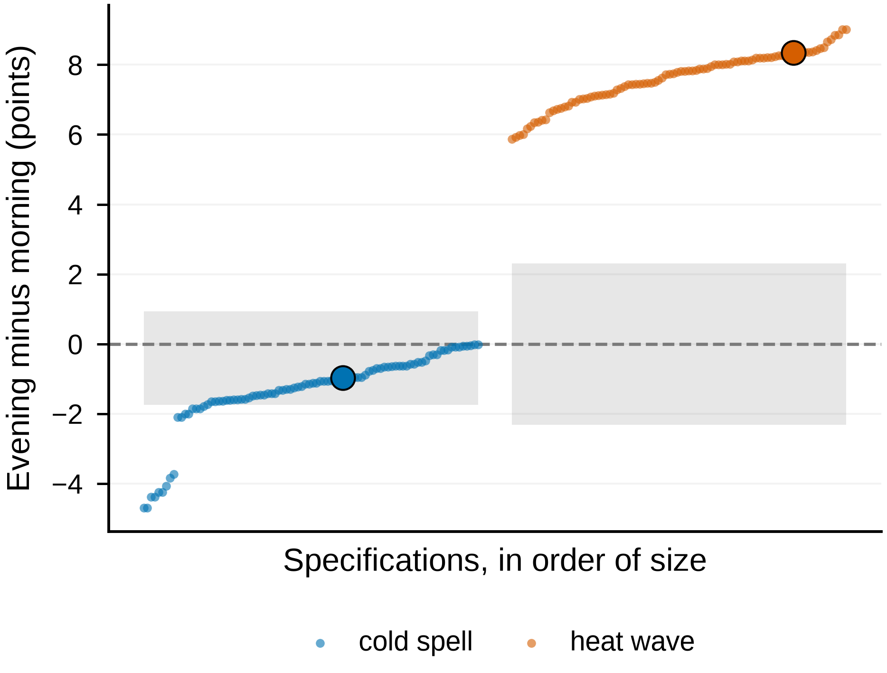
specification_curve_evening PDF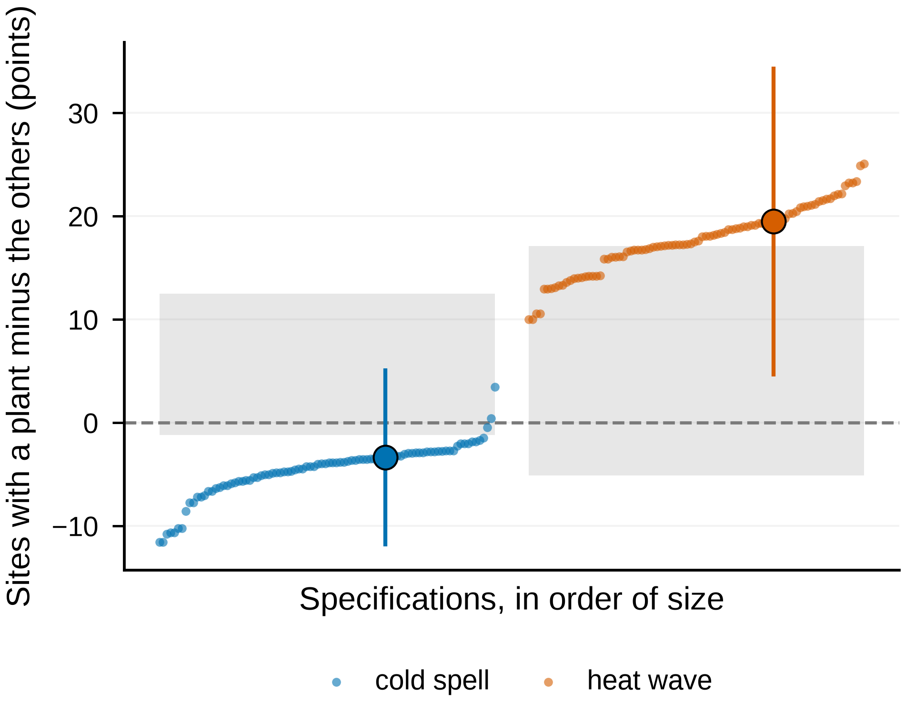
specification_curve_plant PDF
specification_curve_region PDF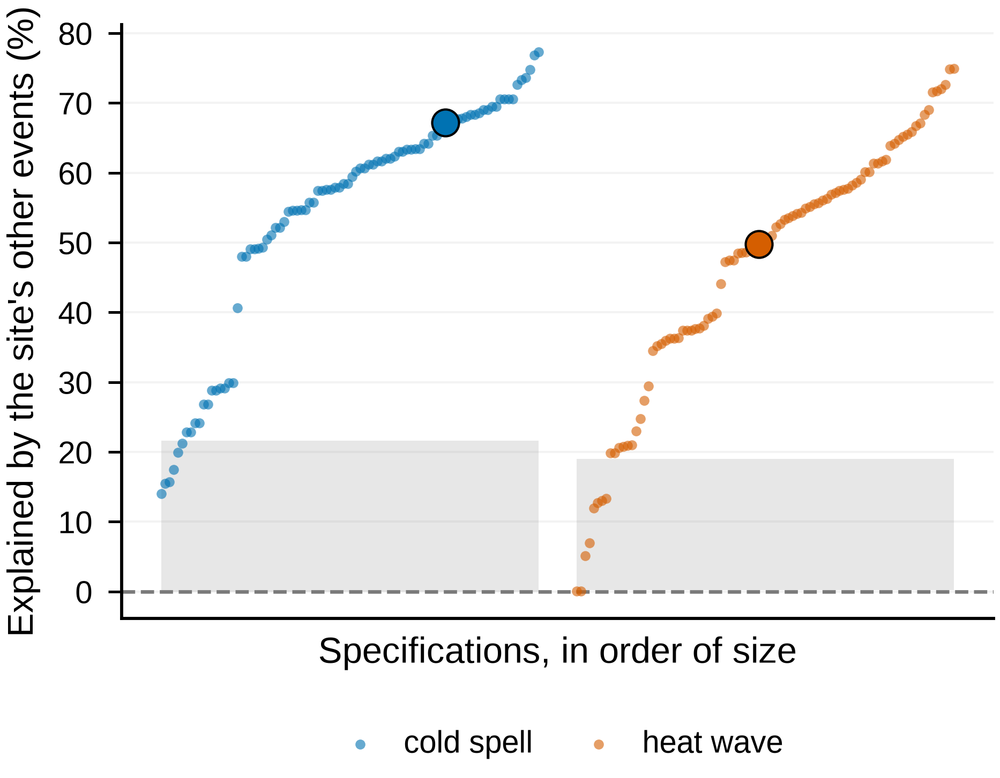
specification_curve_own_events PDF| metric | type | baseline | baseline_lo | baseline_hi | specifications | min | median | max | same_sign_share | interval_excludes_zero_share | placebo_n | placebo_min | placebo_mean | placebo_max | placebo_as_large |
|---|---|---|---|---|---|---|---|---|---|---|---|---|---|---|---|
| build-up per degree | cold spell | 0.42 | 0.1 | 0.73 | 90 | -0.26 | 0.42 | 0.84 | 0.92 | 0.7 | 0 | ||||
| build-up per degree | heatwave | 0.44 | 0.17 | 0.72 | 90 | 0.28 | 0.58 | 0.82 | 1 | 0.98 | 0 | ||||
| degrees, no plant | cold spell | 6.72 | 6.58 | 6.85 | 90 | 6.04 | 6.81 | 7.82 | 1 | 1 | 12 | -0.71 | 0.51 | 1.79 | 0 |
| degrees, no plant | heatwave | 7.97 | 7.8 | 8.14 | 90 | 5.72 | 7 | 8.51 | 1 | 1 | 12 | -1.95 | -0.04 | 0.69 | 0 |
| evening minus morning | cold spell | -0.97 | 90 | -4.69 | -1.14 | -0.02 | 1 | 12 | -1.75 | -0.48 | 0.93 | 3 | |||
| evening minus morning | heatwave | 8.35 | 90 | 5.87 | 7.8 | 9.02 | 1 | 12 | -2.32 | 0.05 | 2.3 | 0 | |||
| event days, no plant | cold spell | 2553 | 90 | 1113 | 3152 | 4542 | 1 | 12 | 692 | 2307.92 | 3711 | 5 | |||
| event days, no plant | heatwave | 782 | 90 | 771 | 1640 | 3491 | 1 | 12 | 332 | 652.25 | 792 | 4 | |||
| other events r2 | cold spell | 67.22 | 90 | 14.04 | 58.93 | 77.33 | 1 | 12 | 0.01 | 7.72 | 21.61 | 0 | |||
| other events r2 | heatwave | 49.78 | 90 | 0.03 | 50.44 | 74.96 | 1 | 12 | 0.25 | 5.26 | 19.02 | 0 | |||
| plant minus no plant | cold spell | -3.36 | -11.97 | 5.26 | 90 | -11.56 | -3.93 | 3.45 | 0.98 | 0.06 | 12 | -1.19 | 3.96 | 12.5 | 5 |
| plant minus no plant | heatwave | 19.5 | 4.49 | 34.5 | 90 | 9.99 | 17.57 | 25.07 | 1 | 1 | 12 | -5.13 | 3.8 | 17.09 | 0 |
| reaction, no plant | cold spell | 11.14 | 8.85 | 13.43 | 90 | 9.4 | 12.09 | 16.89 | 1 | 1 | 12 | -2.04 | 2.13 | 5.5 | 0 |
| reaction, no plant | heatwave | 5.65 | 2.64 | 8.65 | 90 | 3.46 | 5.24 | 6.77 | 1 | 1 | 12 | -2.5 | 0.27 | 2.34 | 0 |
| reaction, plant | cold spell | 7.79 | -1.46 | 17.03 | 90 | 0.84 | 8.08 | 18.06 | 1 | 0.34 | 12 | -1.32 | 6.1 | 15.79 | 3 |
| reaction, plant | heatwave | 25.14 | 8.62 | 41.67 | 90 | 14.11 | 22.86 | 31.06 | 1 | 1 | 12 | -4.28 | 4.07 | 18.5 | 0 |
| region p | cold spell | 0.78 | 90 | 0.02 | 0.38 | 0.83 | 1 | 12 | 0.05 | 0.5 | 0.97 | 3 | |||
| region p | heatwave | 0.46 | 90 | 0.13 | 0.48 | 0.96 | 1 | 12 | 0.1 | 0.49 | 0.94 | 5 | |||
| region share minus chance | cold spell | -3.51 | 90 | -3.51 | 0.55 | 7.65 | 0.39 | 12 | -6.9 | -0.27 | 10.12 | 7 | |||
| region share minus chance | heatwave | -0.34 | 90 | -5.49 | -0.57 | 4.55 | 0.57 | 12 | -6.71 | -0.28 | 8.39 | 11 | |||
| third day on minus first day | cold spell | 4.26 | 2.12 | 6.39 | 90 | -0.74 | 4.32 | 8.74 | 0.93 | 0.8 | 12 | -3.86 | -1.08 | 2.19 | 0 |
| third day on minus first day | heatwave | 4.4 | 2.06 | 6.75 | 90 | 3.21 | 4.76 | 6.89 | 1 | 1 | 12 | -3.59 | 0.04 | 3.41 | 0 |
source: code/reports/event_audit/grid_summary.csv (22 rows shown)
Does a site's past predict its next event? Each site's reaction in each national event, predicted without that event (and without that site, for the means of other sites).

prediction PDF| type | sites | predictor | site_events | n_sites | mae_pts | median_ae_pts | r2_against_event_mean |
|---|---|---|---|---|---|---|---|
| cold spell | no on-site generation | no reaction | 662 | 75 | 12.69 | 8.28 | -0.42 |
| cold spell | no on-site generation | the other sites in the event | 662 | 75 | 10.84 | 8.03 | 0 |
| cold spell | no on-site generation | the other sites of the region | 662 | 75 | 11.21 | 8.19 | -0.08 |
| cold spell | no on-site generation | the site's other events | 662 | 75 | 8.49 | 5.15 | 0.19 |
| cold spell | no on-site generation | other sites and the site's other events | 662 | 75 | 8.48 | 5.39 | 0.19 |
| cold spell | on-site generation | no reaction | 113 | 13 | 17.27 | 6.95 | 0.19 |
| cold spell | on-site generation | the other sites in the event | 113 | 13 | 21.64 | 12.09 | 0 |
| cold spell | on-site generation | the other sites of the region | 113 | 13 | 23.24 | 11.21 | -0.07 |
| cold spell | on-site generation | the site's other events | 113 | 13 | 16.83 | 8.22 | 0.16 |
| cold spell | on-site generation | other sites and the site's other events | 113 | 13 | 22.1 | 11.55 | -0.06 |
| heatwave | no on-site generation | no reaction | 175 | 50 | 9.92 | 7.7 | -0.09 |
| heatwave | no on-site generation | the other sites in the event | 175 | 50 | 9.61 | 7.29 | 0 |
| heatwave | no on-site generation | the other sites of the region | 175 | 50 | 9.85 | 7.34 | -0.08 |
| heatwave | no on-site generation | the site's other events | 175 | 50 | 6.7 | 4.5 | 0.44 |
| heatwave | no on-site generation | other sites and the site's other events | 175 | 50 | 6.99 | 5.24 | 0.41 |
| heatwave | on-site generation | no reaction | 45 | 12 | 25.71 | 16.35 | -0.29 |
| heatwave | on-site generation | the other sites in the event | 45 | 12 | 24.16 | 18.86 | 0 |
| heatwave | on-site generation | the other sites of the region | 45 | 12 | 24.41 | 21.15 | -0.02 |
| heatwave | on-site generation | the site's other events | 45 | 12 | 16.3 | 8.57 | 0.33 |
| heatwave | on-site generation | other sites and the site's other events | 45 | 12 | 20.77 | 14.17 | 0.17 |
source: code/reports/event_audit/prediction_scores.csv (20 rows shown)
The region is a worse guide than the national mean of the event. The site's own other events cut the error by a fifth (cold) to a third (heat). "Two events are sufficient", a hypothesis of the earlier deck, is not supported: in date order the error keeps falling up to the fifth earlier event (12.1 to 10.0 points for cold spells on the same later events).
| type | sites | earlier_events_used | site_events | mae_pts | mae_same_events_pts | same_events |
|---|---|---|---|---|---|---|
| cold spell | no on-site generation | 0 | 662 | 10.84 | 12.05 | 305 |
| cold spell | no on-site generation | 1 | 587 | 10.72 | 12.3 | 305 |
| cold spell | no on-site generation | 2 | 512 | 10.41 | 11.42 | 305 |
| cold spell | no on-site generation | 3 | 437 | 9.68 | 10.67 | 305 |
| cold spell | no on-site generation | 4 | 371 | 9.44 | 10.24 | 305 |
| cold spell | no on-site generation | 5 | 305 | 10.04 | 10.04 | 305 |
| cold spell | on-site generation | 0 | 113 | 21.64 | 32.52 | 48 |
| cold spell | on-site generation | 1 | 100 | 24.18 | 34.66 | 48 |
| cold spell | on-site generation | 2 | 87 | 25.98 | 34.65 | 48 |
| cold spell | on-site generation | 3 | 74 | 26.76 | 33.26 | 48 |
| cold spell | on-site generation | 4 | 61 | 28.67 | 32.6 | 48 |
| cold spell | on-site generation | 5 | 48 | 33.54 | 33.54 | 48 |
| heatwave | no on-site generation | 0 | 189 | 9.88 | 9 | |
| heatwave | no on-site generation | 1 | 125 | 8.3 | 9 | |
| heatwave | no on-site generation | 2 | 75 | 8.68 | 9 | |
| heatwave | no on-site generation | 3 | 38 | 7.76 | 9 | |
| heatwave | no on-site generation | 4 | 20 | 8.99 | 9 | |
| heatwave | no on-site generation | 5 | 9 | 8.67 | 9 | |
| heatwave | on-site generation | 0 | 45 | 24.16 | 4 | |
| heatwave | on-site generation | 1 | 33 | 25.35 | 4 | |
| heatwave | on-site generation | 2 | 21 | 18.49 | 4 | |
| heatwave | on-site generation | 3 | 13 | 15.24 | 4 | |
| heatwave | on-site generation | 4 | 8 | 14.53 | 4 | |
| heatwave | on-site generation | 5 | 4 | 11.82 | 4 |
source: code/reports/event_audit/prediction_curve.csv (24 rows shown)
Is an event more than its temperatures? The daily reaction of the sites without on-site generation on the temperature of the day and of the three days before, each as a difference from the reference days; cold season on degrees of daily mean, warm season on degrees of daily maximum above 24 °C (heat acts above a threshold: the plain difference in the daily maximum explains nothing in the warm season).
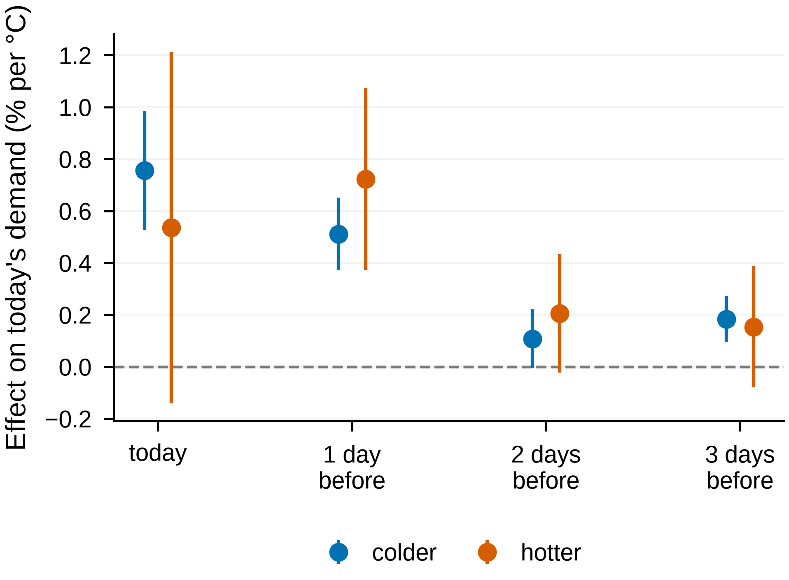
lag_weights PDF
event_term PDFTable: 84 rows
| season | model | event_terms | term | coef | lo | hi | r2 | site_days | sites |
|---|---|---|---|---|---|---|---|---|---|
| heat | the day's temperature | False | d_hot_0 | 1.1 | 0.35 | 1.85 | 0.01 | 33784 | 77 |
| heat | the day's temperature | True | d_hot_0 | 1.04 | 0.19 | 1.88 | 0.01 | 33784 | 77 |
| heat | the day's temperature | True | in_event | -0.67 | -3.15 | 1.81 | 0.01 | 33784 | 77 |
| heat | the day's temperature | True | late | 2.7 | 1.06 | 4.35 | 0.01 | 33784 | 77 |
| heat | the day and three days before | False | d_hot_0 | 0.54 | -0.14 | 1.21 | 0.01 | 33784 | 77 |
| heat | the day and three days before | False | d_hot_1 | 0.72 | 0.37 | 1.07 | 0.01 | 33784 | 77 |
| heat | the day and three days before | False | d_hot_2 | 0.21 | -0.02 | 0.43 | 0.01 | 33784 | 77 |
| heat | the day and three days before | False | d_hot_3 | 0.15 | -0.08 | 0.39 | 0.01 | 33784 | 77 |
| heat | the day and three days before | True | d_hot_0 | 0.56 | -0.2 | 1.33 | 0.01 | 33784 | 77 |
| heat | the day and three days before | True | d_hot_1 | 0.73 | 0.37 | 1.09 | 0.01 | 33784 | 77 |
| heat | the day and three days before | True | d_hot_2 | 0.2 | -0.03 | 0.44 | 0.01 | 33784 | 77 |
| heat | the day and three days before | True | d_hot_3 | 0.15 | -0.08 | 0.38 | 0.01 | 33784 | 77 |
| heat | the day and three days before | True | in_event | -0.58 | -2.94 | 1.79 | 0.01 | 33784 | 77 |
| heat | the day and three days before | True | late | 0.35 | -1.3 | 2 | 0.01 | 33784 | 77 |
| heat | night temperature, day and three days before | False | d_warm_night_0 | 0.76 | 0.42 | 1.1 | 0.01 | 33784 | 77 |
| heat | night temperature, day and three days before | False | d_warm_night_1 | -0.02 | -0.23 | 0.2 | 0.01 | 33784 | 77 |
| heat | night temperature, day and three days before | False | d_warm_night_2 | 0.03 | -0.14 | 0.19 | 0.01 | 33784 | 77 |
| heat | night temperature, day and three days before | False | d_warm_night_3 | 0.04 | -0.13 | 0.21 | 0.01 | 33784 | 77 |
| heat | night temperature, day and three days before | True | d_warm_night_0 | 0.69 | 0.37 | 1.01 | 0.01 | 33784 | 77 |
| heat | night temperature, day and three days before | True | d_warm_night_1 | -0.05 | -0.26 | 0.16 | 0.01 | 33784 | 77 |
| heat | night temperature, day and three days before | True | d_warm_night_2 | 0.02 | -0.15 | 0.18 | 0.01 | 33784 | 77 |
| heat | night temperature, day and three days before | True | d_warm_night_3 | 0.05 | -0.11 | 0.22 | 0.01 | 33784 | 77 |
| heat | night temperature, day and three days before | True | in_event | 2.31 | -0.03 | 4.66 | 0.01 | 33784 | 77 |
| heat | night temperature, day and three days before | True | late | 2.17 | 0.42 | 3.91 | 0.01 | 33784 | 77 |
| heat | both | False | d_hot_0 | 0.4 | -0.29 | 1.09 | 0.02 | 33784 | 77 |
| heat | both | False | d_hot_1 | 0.58 | 0.25 | 0.9 | 0.02 | 33784 | 77 |
| heat | both | False | d_hot_2 | 0.31 | 0.08 | 0.53 | 0.02 | 33784 | 77 |
| heat | both | False | d_hot_3 | 0.14 | -0.07 | 0.36 | 0.02 | 33784 | 77 |
| heat | both | False | d_warm_night_0 | 0.49 | 0.19 | 0.79 | 0.02 | 33784 | 77 |
| heat | both | False | d_warm_night_1 | -0.19 | -0.37 | 0 | 0.02 | 33784 | 77 |
| heat | both | False | d_warm_night_2 | -0.08 | -0.24 | 0.09 | 0.02 | 33784 | 77 |
| heat | both | False | d_warm_night_3 | 0.03 | -0.13 | 0.2 | 0.02 | 33784 | 77 |
| heat | both | True | d_hot_0 | 0.42 | -0.36 | 1.21 | 0.02 | 33784 | 77 |
| heat | both | True | d_hot_1 | 0.58 | 0.25 | 0.92 | 0.02 | 33784 | 77 |
| heat | both | True | d_hot_2 | 0.31 | 0.07 | 0.54 | 0.02 | 33784 | 77 |
| heat | both | True | d_hot_3 | 0.14 | -0.07 | 0.36 | 0.02 | 33784 | 77 |
| heat | both | True | d_warm_night_0 | 0.49 | 0.19 | 0.79 | 0.02 | 33784 | 77 |
| heat | both | True | d_warm_night_1 | -0.19 | -0.38 | 0 | 0.02 | 33784 | 77 |
| heat | both | True | d_warm_night_2 | -0.08 | -0.24 | 0.09 | 0.02 | 33784 | 77 |
| heat | both | True | d_warm_night_3 | 0.03 | -0.13 | 0.2 | 0.02 | 33784 | 77 |
| heat | both | True | in_event | -0.48 | -2.87 | 1.9 | 0.02 | 33784 | 77 |
| heat | both | True | late | 0.23 | -1.38 | 1.85 | 0.02 | 33784 | 77 |
| cold | the day's temperature | False | d_t_mean_0 | -1.22 | -1.5 | -0.94 | 0.1 | 36020 | 77 |
| cold | the day's temperature | True | d_t_mean_0 | -1.16 | -1.44 | -0.87 | 0.1 | 36020 | 77 |
| cold | the day's temperature | True | in_event | 0.68 | -0.51 | 1.88 | 0.1 | 36020 | 77 |
| cold | the day's temperature | True | late | 2.17 | 0.87 | 3.48 | 0.1 | 36020 | 77 |
| cold | the day and three days before | False | d_t_mean_0 | -0.76 | -0.98 | -0.53 | 0.11 | 36020 | 77 |
| cold | the day and three days before | False | d_t_mean_1 | -0.51 | -0.65 | -0.37 | 0.11 | 36020 | 77 |
| cold | the day and three days before | False | d_t_mean_2 | -0.11 | -0.22 | 0.01 | 0.11 | 36020 | 77 |
| cold | the day and three days before | False | d_t_mean_3 | -0.18 | -0.27 | -0.09 | 0.11 | 36020 | 77 |
| cold | the day and three days before | True | d_t_mean_0 | -0.74 | -0.98 | -0.51 | 0.11 | 36020 | 77 |
| cold | the day and three days before | True | d_t_mean_1 | -0.51 | -0.65 | -0.37 | 0.11 | 36020 | 77 |
| cold | the day and three days before | True | d_t_mean_2 | -0.1 | -0.22 | 0.01 | 0.11 | 36020 | 77 |
| cold | the day and three days before | True | d_t_mean_3 | -0.18 | -0.27 | -0.09 | 0.11 | 36020 | 77 |
| cold | the day and three days before | True | in_event | 0.29 | -0.85 | 1.43 | 0.11 | 36020 | 77 |
| cold | the day and three days before | True | late | 0.3 | -0.85 | 1.46 | 0.11 | 36020 | 77 |
| cold | night temperature, day and three days before | False | d_t_min_0 | -0.64 | -0.86 | -0.43 | 0.09 | 36020 | 77 |
| cold | night temperature, day and three days before | False | d_t_min_1 | -0.39 | -0.51 | -0.28 | 0.09 | 36020 | 77 |
| cold | night temperature, day and three days before | False | d_t_min_2 | -0.1 | -0.2 | 0 | 0.09 | 36020 | 77 |
| cold | night temperature, day and three days before | False | d_t_min_3 | -0.13 | -0.22 | -0.04 | 0.09 | 36020 | 77 |
| cold | night temperature, day and three days before | True | d_t_min_0 | -0.59 | -0.8 | -0.37 | 0.09 | 36020 | 77 |
| cold | night temperature, day and three days before | True | d_t_min_1 | -0.38 | -0.49 | -0.26 | 0.09 | 36020 | 77 |
| cold | night temperature, day and three days before | True | d_t_min_2 | -0.09 | -0.19 | 0.02 | 0.09 | 36020 | 77 |
| cold | night temperature, day and three days before | True | d_t_min_3 | -0.12 | -0.21 | -0.03 | 0.09 | 36020 | 77 |
| cold | night temperature, day and three days before | True | in_event | 2.12 | 0.87 | 3.36 | 0.09 | 36020 | 77 |
| cold | night temperature, day and three days before | True | late | 0.82 | -0.44 | 2.09 | 0.09 | 36020 | 77 |
| cold | both | False | d_t_mean_0 | -0.98 | -1.21 | -0.76 | 0.12 | 36020 | 77 |
| cold | both | False | d_t_mean_1 | -0.65 | -0.88 | -0.43 | 0.12 | 36020 | 77 |
| cold | both | False | d_t_mean_2 | -0.24 | -0.43 | -0.05 | 0.12 | 36020 | 77 |
| cold | both | False | d_t_mean_3 | -0.27 | -0.44 | -0.09 | 0.12 | 36020 | 77 |
| cold | both | False | d_t_min_0 | 0.25 | 0.05 | 0.45 | 0.12 | 36020 | 77 |
| cold | both | False | d_t_min_1 | 0.12 | -0.05 | 0.28 | 0.12 | 36020 | 77 |
| cold | both | False | d_t_min_2 | 0.13 | -0.01 | 0.26 | 0.12 | 36020 | 77 |
| cold | both | False | d_t_min_3 | 0.06 | -0.07 | 0.2 | 0.12 | 36020 | 77 |
| cold | both | True | d_t_mean_0 | -0.97 | -1.21 | -0.74 | 0.12 | 36020 | 77 |
| cold | both | True | d_t_mean_1 | -0.65 | -0.87 | -0.43 | 0.12 | 36020 | 77 |
| cold | both | True | d_t_mean_2 | -0.24 | -0.43 | -0.04 | 0.12 | 36020 | 77 |
| cold | both | True | d_t_mean_3 | -0.27 | -0.45 | -0.09 | 0.12 | 36020 | 77 |
| cold | both | True | d_t_min_0 | 0.25 | 0.05 | 0.45 | 0.12 | 36020 | 77 |
| cold | both | True | d_t_min_1 | 0.11 | -0.05 | 0.28 | 0.12 | 36020 | 77 |
| cold | both | True | d_t_min_2 | 0.13 | -0.01 | 0.26 | 0.12 | 36020 | 77 |
| cold | both | True | d_t_min_3 | 0.06 | -0.07 | 0.2 | 0.12 | 36020 | 77 |
| cold | both | True | in_event | 0.21 | -0.9 | 1.32 | 0.12 | 36020 | 77 |
| cold | both | True | late | 0.21 | -0.97 | 1.38 | 0.12 | 36020 | 77 |
source: code/reports/event_audit/lag_models.csv (84 rows shown)
What the plant does. The observed reaction of the import against the reaction that the import would show if the site's demand reacted like that of the sites without a plant and the plant did not change. Plant output is the rated power times the capacity factor of the estates return.

plant_decomposition PDF| type | assumption | demand_reaction_assumed_pct | sites | n | plant_share_of_demand | import_reaction_summed_pct | import_reaction_without_one_site_min_pct | import_reaction_without_one_site_max_pct | import_reaction_if_plant_unchanged_pct | implied_output_change_pct | lo | hi | without_one_site_min_pct | without_one_site_max_pct | sites_with_lower_output |
|---|---|---|---|---|---|---|---|---|---|---|---|---|---|---|---|
| cold spell | like all sites without a plant | 11.1 | all sites with a plant | 9 | 0.7 | 3.9 | -1.7 | 7.1 | 32.4 | 15.3 | 8.8 | 20.3 | 14.1 | 18.3 | 1 |
| cold spell | like all sites without a plant | 11.1 | other plants | 3 | 0.7 | 13.4 | 0.2 | 26.7 | 29.5 | 10.4 | -0.2 | 22 | 3.2 | 21.1 | 1 |
| cold spell | like all sites without a plant | 11.1 | plant follows heat | 6 | 0.7 | -2.5 | -4.1 | 0.9 | 34.1 | 17.6 | 15.1 | 22.9 | 16.9 | 19.1 | 0 |
| cold spell | like the acute sites without a plant | 4.8 | all sites with a plant | 9 | 0.7 | 3.9 | -1.7 | 7.1 | 14.8 | 5.3 | -1.2 | 9.2 | 3.6 | 8.1 | 2 |
| cold spell | like the acute sites without a plant | 4.8 | other plants | 3 | 0.7 | 13.4 | 0.2 | 26.7 | 13.4 | 0 | -8.8 | 10.8 | -6.8 | 8.7 | 1 |
| cold spell | like the acute sites without a plant | 4.8 | plant follows heat | 6 | 0.7 | -2.5 | -4.1 | 0.9 | 15.6 | 7.9 | 6.1 | 9.4 | 7 | 8.7 | 1 |
| heatwave | like all sites without a plant | 5.6 | all sites with a plant | 8 | 0.7 | 47.1 | 30 | 52.2 | 17.2 | -18.6 | -54.1 | -1.4 | -24.3 | -6 | 7 |
| heatwave | like all sites without a plant | 5.6 | other plants | 3 | 0.6 | 60.9 | 22 | 77.3 | 14.2 | -42.2 | -102.5 | -3.1 | -79.8 | -4.3 | 3 |
| heatwave | like all sites without a plant | 5.6 | plant follows heat | 5 | 0.7 | 33.5 | 24.2 | 37.3 | 19.7 | -6.5 | -14.5 | 4 | -11.5 | -2.5 | 4 |
| heatwave | like the acute sites without a plant | 7.8 | all sites with a plant | 8 | 0.7 | 47.1 | 30 | 52.2 | 23.4 | -15.2 | -49.3 | 1.8 | -20.7 | -2.7 | 6 |
| heatwave | like the acute sites without a plant | 7.8 | other plants | 3 | 0.6 | 60.9 | 22 | 77.3 | 19.4 | -38.4 | -98.4 | 3.2 | -75.2 | -0.7 | 2 |
| heatwave | like the acute sites without a plant | 7.8 | plant follows heat | 5 | 0.7 | 33.5 | 24.2 | 37.3 | 26.7 | -3.3 | -10.2 | 6.2 | -8 | 0.7 | 4 |
source: code/reports/event_audit/plant_decomposition.csv (12 rows shown)
Which site effects are real? (added 17 November 2026; site_effect_tests.csv,
site_effect_spread.csv.) Each site's reaction is tested against its own placebo: 2,000 random
sets of blocks of its ordinary days in the same season, with the lengths of its events. The
spread of those placebo reactions is the site's standard error; the p-values are adjusted for
the number of sites (false discovery rate 5 %).
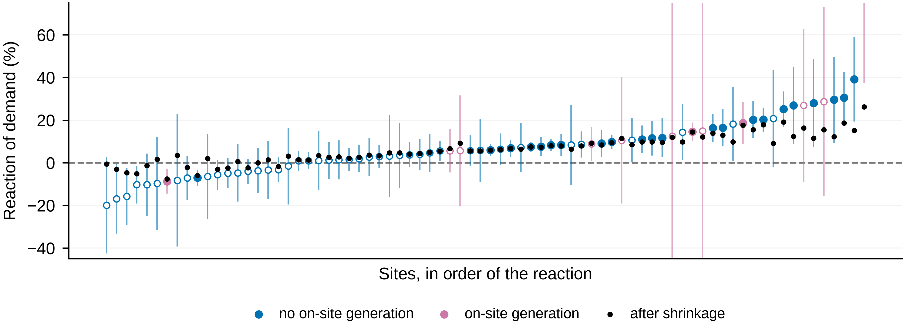
site_effects_heatwave PDF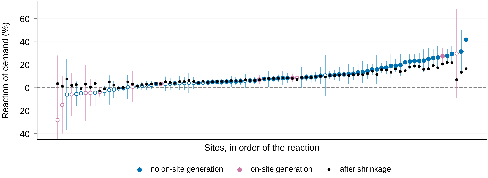
site_effects_cold_spell PDF| type | sites_group | sites | mean_effect_pct | mean_se_pct | true_sd_between_sites_pct | share_of_variance_real | median_site_se_pct | rise_p05 | fall_p05 | rise_q05 | fall_q05 | expected_false_at_p05 |
|---|---|---|---|---|---|---|---|---|---|---|---|---|
| cold spell | no on-site generation | 75 | 9.02 | 0.66 | 4.8 | 0.88 | 2.91 | 51 | 0 | 50 | 0 | 3.75 |
| cold spell | on-site generation | 13 | 5.06 | 2.3 | 5.92 | 0.83 | 6.07 | 4 | 0 | 4 | 0 | 0.65 |
| heatwave | no on-site generation | 64 | 5.42 | 1.02 | 6.44 | 0.79 | 4.46 | 26 | 3 | 21 | 1 | 3.2 |
| heatwave | on-site generation | 12 | 11.94 | 4.74 | 11.76 | 0.81 | 14.15 | 4 | 1 | 3 | 1 | 0.6 |
source: code/reports/event_audit/site_effect_spread.csv (4 rows shown)
- Heat waves, 64 sites without on-site generation: mean +5.4 % (standard error 1.0). 21 sites rise and 1 falls after the adjustment (26 and 3 at p < 0.05, where chance gives 3). The true spread between sites is 6.4 points; 79 % of the observed spread is real.
- Cold spells, 75 sites: mean +9.0 % (0.7). 50 rise, none falls. True spread 4.8 points.
- Sites with on-site generation: for these the measure is biased upwards. Random blocks of ordinary summer days give +1 to +21 % at single sites, because the import is volatile. With that removed, their mean reaction to heat waves is +11.9 % (standard error 4.7), not +25 %, and the difference from the other sites (+6.5 points) is not clear. Finding 3.7 has to be read with this.
- A ranking of raw site reactions overstates the ends. Of the ten highest raw reactions, seven are different from zero after the adjustment; of the ten lowest, two. After shrinkage the largest reaction is +26 %, not +92 %.
How wrong can the event effects be? (added 22 November 2026; command
causal-sensitivity, analysis/causal_sensitivity.py, tables in
code/reports/causal_sensitivity/.) The event effects compare event days with ordinary days of
the same site and season. A hidden factor that makes event days more likely and also moves
demand would bias them. The generalized marginal sensitivity model of Frauen, Melnychuk and
Feuerriegel (NeurIPS 2023) bounds the effect for a given strength Γ of such a factor: Γ is the
largest factor by which it can change the odds that a day is an event day. The bounds are
sharp, and they are a worst case: they let the hidden factor line up with demand as badly as
possible.
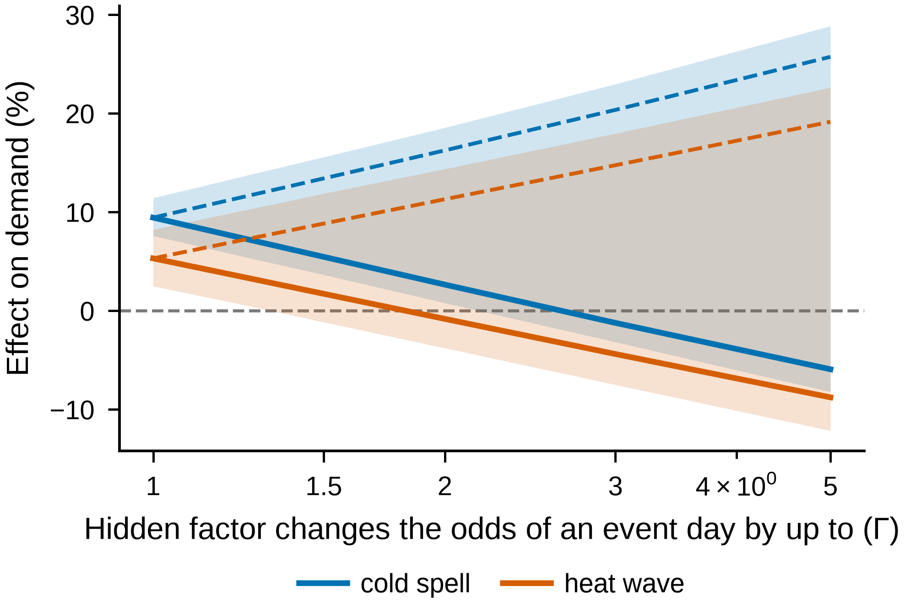
sensitivity_bounds PDF| gamma | sites | effect_lo | effect_hi | ci_lo | ci_hi | sites_with_lower_bound_above_zero | type |
|---|---|---|---|---|---|---|---|
| 1 | 64 | 5.31 | 5.31 | 2.49 | 8.22 | 0.7 | heatwave |
| 1.1 | 64 | 4.47 | 6.15 | 1.65 | 9.1 | 0.67 | heatwave |
| 1.25 | 64 | 3.34 | 7.26 | 0.52 | 10.24 | 0.66 | heatwave |
| 1.5 | 64 | 1.72 | 8.84 | -1.15 | 11.88 | 0.59 | heatwave |
| 2 | 64 | -0.82 | 11.3 | -3.78 | 14.37 | 0.48 | heatwave |
| 3 | 64 | -4.39 | 14.75 | -7.5 | 17.97 | 0.38 | heatwave |
| 5 | 64 | -8.77 | 19.15 | -12.15 | 22.62 | 0.31 | heatwave |
| 10 | 64 | -14.63 | 25.32 | -18.46 | 29.32 | 0.17 | heatwave |
| 1 | 75 | 9.44 | 9.44 | 7.59 | 11.45 | 0.88 | cold spell |
| 1.1 | 75 | 8.51 | 10.38 | 6.67 | 12.41 | 0.85 | cold spell |
| 1.25 | 75 | 7.25 | 11.63 | 5.39 | 13.73 | 0.85 | cold spell |
| 1.5 | 75 | 5.46 | 13.41 | 3.65 | 15.58 | 0.8 | cold spell |
| 2 | 75 | 2.65 | 16.25 | 0.8 | 18.56 | 0.64 | cold spell |
| 3 | 75 | -1.23 | 20.36 | -3.17 | 22.98 | 0.51 | cold spell |
| 5 | 75 | -5.93 | 25.73 | -8.21 | 28.86 | 0.28 | cold spell |
| 10 | 75 | -12.35 | 33.76 | -15.06 | 37.72 | 0.08 | cold spell |
source: code/reports/causal_sensitivity/bounds.csv (16 rows shown)
- Heat waves (64 sites): +5.3 % at Γ = 1. The lower bound reaches zero at Γ = 1.84, its interval at Γ = 1.34.
- Cold spells (75 sites): +9.4 %. The lower bound reaches zero at Γ = 2.64, its interval at Γ = 2.18.
- What a Γ of that size is. The same odds ratio for what we do observe: weekends 1.06 and 1.12 (the weather does not know the weekday), school holidays 3.2 for heat waves and 1.5 for cold spells, the calendar month 2.4 and 8.5. These factors are stronger than the breakdown values, yet holding them fixed moves the effect from 4.9 to 4.8 % (heat) and from 9.3 to 8.9 % (cold): they are tied to the timing of events and hardly to the reaction, because the reference days already remove the season.
- Reading. A hidden factor would have to be tied to the timing of events about as strongly as school holidays are, and to demand far more strongly than any calendar factor we can measure. The cold effect is safe against that; the heat effect has less room.
| type | factor | levels | odds_ratio |
|---|---|---|---|
| heatwave | weekend | 2 | 1.06 |
| heatwave | school holidays (approximate) | 2 | 3.24 |
| heatwave | calendar month | 5 | 2.38 |
| cold spell | weekend | 2 | 1.12 |
| cold spell | school holidays (approximate) | 2 | 1.5 |
| cold spell | calendar month | 5 | 8.5 |
source: code/reports/causal_sensitivity/benchmarks.csv (6 rows shown)
| type | site_days | effect_pct | lo | hi | effect_adjusted_pct | adjusted_lo | adjusted_hi |
|---|---|---|---|---|---|---|---|
| heatwave | 33784 | 4.92 | 3.6 | 6.23 | 4.77 | 3.42 | 6.13 |
| cold spell | 36093 | 9.28 | 8.14 | 10.43 | 8.93 | 7.72 | 10.14 |
source: code/reports/causal_sensitivity/observed_adjustment.csv (2 rows shown)
Road traffic near the site (traffic_moderator.csv). The Department for Transport counts
in the SENSE data pack are yearly averages for count points, not daily series, so they cannot
serve as a daily covariate. As a descriptor of the place (the flow at the busiest count point
within one kilometre, median 23,000 vehicles a day) they do not go with the reaction of a site:
−1.6 points per standard deviation for heat waves (−4.5 to +1.3) and −1.8 for cold spells (−5.1
to +1.4).
| type | sites | sites_without_count_point | median_flow | points_per_sd | lo | hi | p | adj_r2_gain |
|---|---|---|---|---|---|---|---|---|
| cold spell | 65 | 10 | 23213 | -1.83 | -5.07 | 1.41 | 0.27 | 0.02 |
| heatwave | 58 | 6 | 23648.5 | -1.6 | -4.45 | 1.26 | 0.28 | 0 |
source: code/reports/event_audit/traffic_moderator.csv (2 rows shown)
7. The forecast on the whole record
forecast-probes --which record and forecast-record (analysis/forecast_record.py, tables
in code/reports/forecast_record/). Chronos-2, zero-shot, for every day from 18 January 2023 to
8 May 2026 at the 91 forecast sites, on a GPU: without inputs, and with calendar, price,
national forecasts and the weather forecast of the day before. A site-day counts if all 48
half-hours are observed and at least 80 % of the six weeks before it.
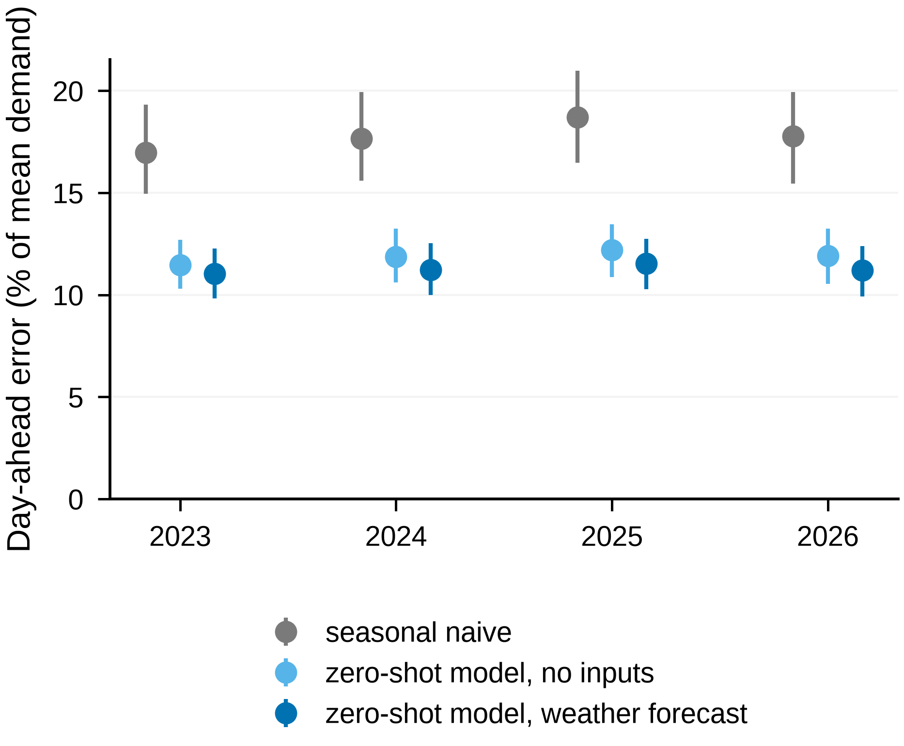
record_error_years PDF
record_value_years PDF| window | model | sites | site_days | days | nmae_pct | nmae_lo | nmae_hi | naive_nmae_pct | captured_point_pct | captured_lo | captured_hi | captured_q70_pct | plant_error_share_pct | top3_error_share_pct | plant_large_step_day_share_pct | plant_large_step_error_share_pct |
|---|---|---|---|---|---|---|---|---|---|---|---|---|---|---|---|---|
| whole record | chronos2 | 91 | 103786 | 1201 | 11.8 | 10.6 | 13 | 17.7 | 50 | 45.4 | 54.5 | 52.3 | 76.8 | 54.4 | 1.5 | 35.2 |
| whole record | chronos2_ifs | 91 | 103786 | 1201 | 11.2 | 10 | 12.3 | 17.7 | 52.4 | 47.7 | 57.5 | 54.9 | 77.7 | 55.4 | 1.5 | 36.7 |
| whole record | seasonal_naive | 91 | 103787 | 1202 | 17.7 | 15.7 | 19.8 | 17.7 | 38.9 | 34.2 | 44.6 | 81.9 | 58.6 | 1.5 | 28.5 | |
| 2023 | chronos2 | 91 | 28686 | 346 | 11.5 | 10.3 | 12.7 | 17 | 50.7 | 45.1 | 56 | 52.1 | 76.5 | 55.3 | 1.3 | 31 |
| 2023 | chronos2_ifs | 91 | 28686 | 346 | 11 | 9.8 | 12.3 | 17 | 52.6 | 47.1 | 58.1 | 54.8 | 77 | 55.4 | 1.3 | 32.7 |
| 2023 | seasonal_naive | 91 | 28687 | 347 | 17 | 15 | 19.3 | 17 | 39 | 33.9 | 45 | 81.6 | 59.7 | 1.3 | 26.6 | |
| 2024 | chronos2 | 91 | 32499 | 364 | 11.9 | 10.6 | 13.2 | 17.7 | 49 | 44.2 | 54.3 | 51.7 | 77.1 | 55.8 | 1.6 | 35.7 |
| 2024 | chronos2_ifs | 91 | 32499 | 364 | 11.2 | 10 | 12.5 | 17.7 | 51.6 | 46.8 | 57.2 | 54.3 | 78 | 56.9 | 1.6 | 37.3 |
| 2024 | seasonal_naive | 91 | 32499 | 364 | 17.7 | 15.6 | 19.9 | 17.7 | 38.7 | 33.5 | 45.1 | 81.2 | 57.5 | 1.6 | 28.5 | |
| 2025 | chronos2 | 91 | 31649 | 364 | 12.2 | 10.9 | 13.5 | 18.7 | 49.2 | 45.2 | 53.1 | 51.6 | 78.4 | 56.3 | 1.7 | 38.5 |
| 2025 | chronos2_ifs | 91 | 31649 | 364 | 11.5 | 10.3 | 12.7 | 18.7 | 51.6 | 47.1 | 56.6 | 54.2 | 79.2 | 57.2 | 1.7 | 39.8 |
| 2025 | seasonal_naive | 91 | 31649 | 364 | 18.7 | 16.5 | 21 | 18.7 | 38 | 33.4 | 43.3 | 83.7 | 62 | 1.7 | 30.3 | |
| 2026 | chronos2 | 91 | 10952 | 127 | 11.9 | 10.5 | 13.3 | 17.8 | 53.2 | 49.5 | 56.6 | 56.1 | 70.4 | 42.3 | 1.5 | 34 |
| 2026 | chronos2_ifs | 91 | 10952 | 127 | 11.2 | 9.9 | 12.4 | 17.8 | 56.6 | 52.3 | 61.3 | 59.1 | 72.6 | 44 | 1.5 | 35.1 |
| 2026 | seasonal_naive | 91 | 10952 | 127 | 17.8 | 15.5 | 19.9 | 17.8 | 42.1 | 37.1 | 47.3 | 77.8 | 54.8 | 1.5 | 27.8 | |
| proof-of-concept window, every day | chronos2 | 91 | 29658 | 341 | 12.1 | 10.8 | 13.4 | 18.3 | 50.2 | 46.3 | 53.9 | 53 | 76.6 | 52.4 | 1.8 | 40.7 |
| proof-of-concept window, every day | chronos2_ifs | 91 | 29658 | 341 | 11.5 | 10.2 | 12.7 | 18.3 | 52.9 | 49 | 57.3 | 55.8 | 77.7 | 53.8 | 1.8 | 42 |
| proof-of-concept window, every day | seasonal_naive | 91 | 29658 | 341 | 18.3 | 16 | 20.3 | 18.3 | 39.3 | 34.6 | 44.7 | 82.4 | 57.4 | 1.8 | 31.7 | |
| proof-of-concept window, its 69 days | chronos2 | 91 | 6022 | 69 | 12.1 | 10.7 | 13.3 | 18.2 | 51.2 | 47.5 | 55.2 | 52.9 | 78 | 56.3 | 1.8 | 41.8 |
| proof-of-concept window, its 69 days | chronos2_ifs | 91 | 6022 | 69 | 11.4 | 10.2 | 12.6 | 18.2 | 53.6 | 50.6 | 56.7 | 55.6 | 78.6 | 57 | 1.8 | 43.7 |
| proof-of-concept window, its 69 days | seasonal_naive | 91 | 6022 | 69 | 18.2 | 15.9 | 20.4 | 18.2 | 40.4 | 35.8 | 45.6 | 83.6 | 61 | 1.8 | 34.4 |
source: code/reports/forecast_record/by_period.csv (21 rows shown)

record_event_value PDFTable: 78 rows
| definition | type | season | sites_group | model | sites | event_site_days | nmae_event_pct | nmae_other_pct | nmae_diff_pts | nmae_diff_lo | nmae_diff_hi | bias_event_pct | captured_event_pct | captured_other_pct | captured_diff_pts | captured_diff_lo | captured_diff_hi |
|---|---|---|---|---|---|---|---|---|---|---|---|---|---|---|---|---|---|
| catalogue | heatwave | all | all sites | chronos2 | 81 | 986 | 13.1 | 12.3 | 0.8 | -0.1 | 1.7 | -2.9 | 24.8 | 41.1 | -16.3 | -26 | -7.5 |
| catalogue | heatwave | all | all sites | chronos2_ifs | 81 | 986 | 12.1 | 11.8 | 0.4 | -0.5 | 1.3 | -1.7 | 27 | 45.4 | -18.4 | -27.7 | -10 |
| catalogue | heatwave | all | all sites | seasonal_naive | 81 | 977 | 20.3 | 18.6 | 1.7 | 0.4 | 2.9 | -5.4 | 13.6 | 28.7 | -15.1 | -22.3 | -10.3 |
| catalogue | heatwave | summer 2023 | all sites | chronos2 | 81 | 545 | 12.1 | 11.4 | 0.7 | -0.4 | 1.8 | -2.5 | 27.1 | 43.4 | -16.3 | -27.6 | -2.4 |
| catalogue | heatwave | summer 2023 | all sites | chronos2_ifs | 81 | 545 | 11.4 | 11 | 0.4 | -0.7 | 1.5 | -1.4 | 26.1 | 47.3 | -21.2 | -28.5 | -11.8 |
| catalogue | heatwave | summer 2023 | all sites | seasonal_naive | 81 | 541 | 20.4 | 17.1 | 3.3 | 1.6 | 4.8 | -6.7 | 11.7 | 29.5 | -17.8 | -24.8 | -11.3 |
| catalogue | heatwave | summer 2024 | all sites | chronos2 | 8 | 28 | 10.1 | 11.4 | -1.3 | -6.7 | 1.8 | -4.3 | 40.2 | 33.5 | 6.7 | -26.1 | 14.6 |
| catalogue | heatwave | summer 2024 | all sites | chronos2_ifs | 8 | 28 | 9.4 | 11 | -1.7 | -7.1 | 1.6 | -3.4 | 43.4 | 37.7 | 5.7 | -22.8 | 14.4 |
| catalogue | heatwave | summer 2024 | all sites | seasonal_naive | 8 | 28 | 23.8 | 20.7 | 3.1 | 2 | 4.1 | -2.3 | 36.4 | 19.5 | 17 | -34.5 | 30.7 |
| catalogue | heatwave | summer 2025 | all sites | chronos2 | 66 | 413 | 15.4 | 13.1 | 2.2 | 0.7 | 4.1 | -3.3 | 19.9 | 39.9 | -20 | -26.8 | -12.3 |
| catalogue | heatwave | summer 2025 | all sites | chronos2_ifs | 66 | 413 | 14.1 | 12.6 | 1.5 | 0.1 | 3.1 | -2.1 | 26.3 | 44.7 | -18.4 | -28.5 | -10.3 |
| catalogue | heatwave | summer 2025 | all sites | seasonal_naive | 66 | 408 | 21.5 | 20.5 | 1.1 | -0.1 | 2.2 | -4.5 | 13.5 | 29.3 | -15.8 | -22.2 | -10.3 |
| catalogue | heatwave | all | no on-site generation | chronos2 | 70 | 825 | 11.5 | 11.1 | 0.3 | -0.5 | 1.1 | -2.4 | 27.6 | 47 | -19.4 | -26.3 | -10.1 |
| catalogue | heatwave | all | no on-site generation | chronos2_ifs | 70 | 825 | 11 | 10.7 | 0.3 | -0.5 | 1 | -1.6 | 32.1 | 54.1 | -22 | -32 | -10 |
| catalogue | heatwave | all | no on-site generation | seasonal_naive | 70 | 818 | 18 | 16 | 2 | 0.9 | 3 | -4.6 | 18.9 | 39.5 | -20.6 | -28.5 | -10.9 |
| catalogue | heatwave | all | on-site generation | chronos2 | 11 | 161 | 23.2 | 19.6 | 3.6 | -0.2 | 7.9 | -6 | 22.7 | 36.2 | -13.5 | -30.1 | -3.3 |
| catalogue | heatwave | all | on-site generation | chronos2_ifs | 11 | 161 | 19.5 | 18.6 | 0.9 | -3.4 | 5.8 | -3.7 | 23.1 | 38.2 | -15.1 | -26 | -7.4 |
| catalogue | heatwave | all | on-site generation | seasonal_naive | 11 | 159 | 35 | 35.1 | -0.1 | -6.6 | 5.3 | -12.6 | 9.6 | 19.8 | -10.2 | -13.1 | -8.2 |
| catalogue | cold spell | all | all sites | chronos2 | 90 | 3300 | 12.6 | 11.4 | 1.3 | 0.6 | 1.9 | -3.2 | 51 | 53.8 | -2.8 | -6.1 | 0.9 |
| catalogue | cold spell | all | all sites | chronos2_ifs | 90 | 3300 | 11.4 | 10.9 | 0.6 | -0.1 | 1.2 | -0.6 | 55.4 | 56.6 | -1.1 | -4.3 | 1.8 |
| catalogue | cold spell | all | all sites | seasonal_naive | 90 | 3296 | 21 | 17.3 | 3.7 | 2.7 | 4.8 | -6.1 | 33.9 | 41.6 | -7.7 | -11.2 | -3.8 |
| catalogue | cold spell | winter 2022/23 | all sites | chronos2 | 68 | 503 | 10.1 | 9.8 | 0.3 | -0.6 | 1.2 | -2.3 | 53.7 | 57.9 | -4.2 | -8.1 | 1 |
| catalogue | cold spell | winter 2022/23 | all sites | chronos2_ifs | 68 | 503 | 9.6 | 9.8 | -0.2 | -1.4 | 0.9 | -0.6 | 53.5 | 58.4 | -4.9 | -10.9 | 1.2 |
| catalogue | cold spell | winter 2022/23 | all sites | seasonal_naive | 68 | 503 | 16.8 | 15.9 | 0.9 | -1.5 | 4.2 | -4.5 | 36.9 | 45.6 | -8.7 | -18.9 | 1.4 |
| catalogue | cold spell | winter 2023/24 | all sites | chronos2 | 90 | 1026 | 11.8 | 11.3 | 0.5 | -0.6 | 1.5 | -3.1 | 55.5 | 54.4 | 1.1 | -7 | 10.6 |
| catalogue | cold spell | winter 2023/24 | all sites | chronos2_ifs | 90 | 1026 | 10.8 | 10.9 | -0.1 | -1.2 | 0.8 | -0.7 | 60 | 56.6 | 3.4 | -2.2 | 10.1 |
| catalogue | cold spell | winter 2023/24 | all sites | seasonal_naive | 90 | 1024 | 17.2 | 16.9 | 0.3 | -1.4 | 1.6 | -5.1 | 42.2 | 41.2 | 1 | -8.5 | 8.7 |
| catalogue | cold spell | winter 2024/25 | all sites | chronos2 | 89 | 1175 | 12.5 | 11.4 | 1.2 | 0.2 | 2.1 | -3.2 | 48.8 | 51.1 | -2.3 | -8.8 | 2 |
| catalogue | cold spell | winter 2024/25 | all sites | chronos2_ifs | 89 | 1175 | 11.2 | 10.9 | 0.4 | -0.7 | 1.4 | -0.6 | 54.2 | 53.6 | 0.5 | -6.8 | 5 |
| catalogue | cold spell | winter 2024/25 | all sites | seasonal_naive | 89 | 1174 | 22.8 | 17.8 | 5 | 3.6 | 6.9 | -6.6 | 28.5 | 39.1 | -10.7 | -15.7 | -4 |
| catalogue | cold spell | winter 2025/26 | all sites | chronos2 | 90 | 596 | 14.2 | 11.3 | 2.9 | 1.6 | 4.4 | -4.2 | 45 | 53.6 | -8.6 | -16.1 | -1.2 |
| catalogue | cold spell | winter 2025/26 | all sites | chronos2_ifs | 90 | 596 | 12.4 | 10.7 | 1.7 | 0.3 | 3.3 | -0.4 | 52.1 | 58.8 | -6.7 | -18.1 | 3 |
| catalogue | cold spell | winter 2025/26 | all sites | seasonal_naive | 90 | 595 | 24.6 | 17.3 | 7.3 | 4.3 | 10.8 | -9.2 | 27.4 | 42.7 | -15.4 | -23.7 | -5.4 |
| catalogue | cold spell | all | no on-site generation | chronos2 | 78 | 2882 | 12.4 | 11 | 1.3 | 0.9 | 1.9 | -3.4 | 49.5 | 56.1 | -6.6 | -9.7 | -4.9 |
| catalogue | cold spell | all | no on-site generation | chronos2_ifs | 78 | 2882 | 11.1 | 10.5 | 0.5 | 0.2 | 1 | -0.7 | 58.8 | 60 | -1.2 | -3.6 | 0.1 |
| catalogue | cold spell | all | no on-site generation | seasonal_naive | 78 | 2880 | 19 | 16.1 | 2.8 | 2.2 | 3.5 | -6.4 | 35.8 | 46.3 | -10.5 | -14.3 | -5 |
| catalogue | cold spell | all | on-site generation | chronos2 | 12 | 418 | 14.5 | 13.6 | 1 | -2.7 | 4.2 | -1.9 | 52.7 | 51.7 | 1 | -4.4 | 8.1 |
| catalogue | cold spell | all | on-site generation | chronos2_ifs | 12 | 418 | 13.8 | 13.2 | 0.6 | -3.3 | 4 | -0.3 | 51.5 | 53.2 | -1.8 | -6.8 | 5.5 |
| catalogue | cold spell | all | on-site generation | seasonal_naive | 12 | 416 | 34.4 | 25.3 | 9.2 | 3 | 15.2 | -3.8 | 31.8 | 37.2 | -5.3 | -8.9 | 0.2 |
| site percentiles | heatwave | all | all sites | chronos2 | 90 | 3183 | 13 | 12.2 | 0.7 | 0.1 | 1.4 | -2.3 | 30.5 | 44.5 | -14 | -18.4 | -9 |
| site percentiles | heatwave | all | all sites | chronos2_ifs | 90 | 3183 | 12.3 | 11.7 | 0.6 | 0 | 1.2 | -1.4 | 34.2 | 47.1 | -13 | -18.8 | -8.1 |
| site percentiles | heatwave | all | all sites | seasonal_naive | 90 | 3147 | 19.5 | 18.4 | 1.2 | 0.3 | 1.9 | -3.7 | 20.2 | 32.9 | -12.7 | -20.2 | -7.2 |
| site percentiles | heatwave | summer 2023 | all sites | chronos2 | 90 | 1210 | 12.3 | 11.3 | 1 | 0.2 | 1.9 | -2 | 28.9 | 44.9 | -15.9 | -24.6 | -5.2 |
| site percentiles | heatwave | summer 2023 | all sites | chronos2_ifs | 90 | 1210 | 11.8 | 10.9 | 0.9 | 0.1 | 1.8 | -1 | 33.7 | 47.2 | -13.5 | -20.1 | -5.2 |
| site percentiles | heatwave | summer 2023 | all sites | seasonal_naive | 90 | 1196 | 20 | 16.8 | 3.2 | 1.9 | 4.6 | -4.4 | 16.6 | 32.9 | -16.3 | -24.3 | -8.2 |
| site percentiles | heatwave | summer 2024 | all sites | chronos2 | 83 | 440 | 12.3 | 12 | 0.3 | -0.6 | 1.2 | -2.6 | 31.1 | 41.7 | -10.6 | -15.9 | -5.7 |
| site percentiles | heatwave | summer 2024 | all sites | chronos2_ifs | 83 | 440 | 11.6 | 11.5 | 0.1 | -0.8 | 1 | -2.3 | 32.9 | 43.9 | -11 | -18 | -5.5 |
| site percentiles | heatwave | summer 2024 | all sites | seasonal_naive | 83 | 438 | 17.4 | 17.5 | -0.1 | -1.3 | 1.1 | -2.4 | 29.6 | 30.8 | -1.2 | -14.9 | 13.1 |
| site percentiles | heatwave | summer 2025 | all sites | chronos2 | 90 | 1533 | 14 | 13.3 | 0.8 | 0.1 | 1.5 | -2.5 | 31.7 | 45.6 | -13.9 | -18.3 | -9.6 |
| site percentiles | heatwave | summer 2025 | all sites | chronos2_ifs | 90 | 1533 | 13.2 | 12.7 | 0.6 | -0.1 | 1.2 | -1.4 | 34.9 | 48.7 | -13.8 | -20.3 | -7.5 |
| site percentiles | heatwave | summer 2025 | all sites | seasonal_naive | 90 | 1513 | 20.7 | 20.1 | 0.6 | -0.4 | 1.6 | -3.5 | 21.3 | 34 | -12.7 | -21.1 | -5.3 |
| site percentiles | heatwave | all | no on-site generation | chronos2 | 78 | 2793 | 11.7 | 11.2 | 0.5 | -0.1 | 1.2 | -2 | 34 | 49.1 | -15.1 | -19.4 | -8.7 |
| site percentiles | heatwave | all | no on-site generation | chronos2_ifs | 78 | 2793 | 11.2 | 10.8 | 0.5 | 0 | 1.1 | -1.3 | 36.6 | 53.2 | -16.6 | -23.9 | -7.6 |
| site percentiles | heatwave | all | no on-site generation | seasonal_naive | 78 | 2768 | 17.3 | 15.9 | 1.4 | 0.7 | 2.1 | -2.9 | 22.5 | 41.4 | -18.9 | -27 | -9 |
| site percentiles | heatwave | all | on-site generation | chronos2 | 12 | 390 | 21 | 18.6 | 2.4 | -0.1 | 5.1 | -5.8 | 27.5 | 40.3 | -12.8 | -20.3 | -5.6 |
| site percentiles | heatwave | all | on-site generation | chronos2_ifs | 12 | 390 | 19 | 17.7 | 1.3 | -1.8 | 4.5 | -3.1 | 32.1 | 41.8 | -9.7 | -12.5 | -6.3 |
| site percentiles | heatwave | all | on-site generation | seasonal_naive | 12 | 379 | 34 | 34.4 | -0.4 | -5 | 3 | -12.2 | 18.3 | 25.3 | -7 | -11.8 | -3.9 |
| site percentiles | cold spell | all | all sites | chronos2 | 91 | 3612 | 12.5 | 11.2 | 1.3 | 0.7 | 1.9 | -3.1 | 48.9 | 54 | -5.2 | -7.9 | -2.1 |
| site percentiles | cold spell | all | all sites | chronos2_ifs | 91 | 3612 | 11.3 | 10.8 | 0.6 | 0 | 1.2 | -0.6 | 54.1 | 56.5 | -2.4 | -5.6 | 0.9 |
| site percentiles | cold spell | all | all sites | seasonal_naive | 91 | 3607 | 20.9 | 17.1 | 3.8 | 2.8 | 4.9 | -5.7 | 33.3 | 41.4 | -8.1 | -11.4 | -4.5 |
| site percentiles | cold spell | winter 2022/23 | all sites | chronos2 | 76 | 568 | 10.4 | 9.9 | 0.5 | -0.3 | 1.4 | -2.4 | 53.6 | 57.8 | -4.2 | -12.8 | 4.8 |
| site percentiles | cold spell | winter 2022/23 | all sites | chronos2_ifs | 76 | 568 | 9.9 | 9.8 | 0.2 | -0.8 | 1.1 | -0.7 | 53 | 58.4 | -5.5 | -10.7 | -0.5 |
| site percentiles | cold spell | winter 2022/23 | all sites | seasonal_naive | 76 | 568 | 16.7 | 16.1 | 0.6 | -1.3 | 2.7 | -4.6 | 35 | 45.3 | -10.3 | -19.1 | -0.3 |
| site percentiles | cold spell | winter 2023/24 | all sites | chronos2 | 91 | 1070 | 11.5 | 11.2 | 0.3 | -0.8 | 1.3 | -3.1 | 55.8 | 54.3 | 1.5 | -6.6 | 10.7 |
| site percentiles | cold spell | winter 2023/24 | all sites | chronos2_ifs | 91 | 1070 | 10.6 | 10.9 | -0.2 | -1.2 | 0.7 | -0.7 | 60.6 | 56.5 | 4.2 | -2.3 | 11.7 |
| site percentiles | cold spell | winter 2023/24 | all sites | seasonal_naive | 91 | 1068 | 17.1 | 16.7 | 0.4 | -1.3 | 1.7 | -5 | 43.3 | 41 | 2.3 | -5.7 | 9.3 |
| site percentiles | cold spell | winter 2024/25 | all sites | chronos2 | 91 | 1315 | 12 | 11.3 | 0.8 | -0.1 | 1.6 | -2.9 | 45.5 | 52.2 | -6.8 | -11.6 | -1.8 |
| site percentiles | cold spell | winter 2024/25 | all sites | chronos2_ifs | 91 | 1315 | 10.9 | 10.8 | 0.1 | -1 | 1 | -0.5 | 51.1 | 54.7 | -3.5 | -9 | 0 |
| site percentiles | cold spell | winter 2024/25 | all sites | seasonal_naive | 91 | 1313 | 22.1 | 17.4 | 4.6 | 3.1 | 6.4 | -5.5 | 28.5 | 39.7 | -11.2 | -17.6 | -3.8 |
| site percentiles | cold spell | winter 2025/26 | all sites | chronos2 | 91 | 659 | 14.8 | 11.3 | 3.5 | 2.3 | 4.9 | -4.5 | 38.9 | 53.2 | -14.4 | -23.9 | -4.1 |
| site percentiles | cold spell | winter 2025/26 | all sites | chronos2_ifs | 91 | 659 | 12.5 | 10.8 | 1.8 | 0.5 | 3.3 | -0.5 | 49.9 | 57.3 | -7.5 | -18.8 | 4.7 |
| site percentiles | cold spell | winter 2025/26 | all sites | seasonal_naive | 91 | 658 | 24.6 | 17.4 | 7.2 | 4.8 | 9.9 | -9.3 | 24 | 41.3 | -17.3 | -25 | -6.8 |
| site percentiles | cold spell | all | no on-site generation | chronos2 | 79 | 3154 | 12.1 | 10.8 | 1.3 | 0.9 | 1.7 | -3.2 | 48 | 55.5 | -7.5 | -9.8 | -4.9 |
| site percentiles | cold spell | all | no on-site generation | chronos2_ifs | 79 | 3154 | 10.9 | 10.4 | 0.5 | 0.2 | 0.9 | -0.6 | 57.5 | 59.5 | -2 | -3.9 | -0.1 |
| site percentiles | cold spell | all | no on-site generation | seasonal_naive | 79 | 3151 | 18.8 | 15.8 | 3 | 2.4 | 3.6 | -6 | 35.7 | 45.9 | -10.2 | -14.1 | -5.1 |
| site percentiles | cold spell | all | on-site generation | chronos2 | 12 | 458 | 14.9 | 13.6 | 1.3 | -1.6 | 4.4 | -2.6 | 49.7 | 52.7 | -3 | -7.9 | 1.8 |
| site percentiles | cold spell | all | on-site generation | chronos2_ifs | 12 | 458 | 14.1 | 13.2 | 0.9 | -2.4 | 4.7 | -0.4 | 50.9 | 53.8 | -2.9 | -8.5 | 3.2 |
| site percentiles | cold spell | all | on-site generation | seasonal_naive | 12 | 456 | 34.4 | 25.3 | 9 | 3.2 | 15.3 | -4.2 | 31.2 | 37.3 | -6.2 | -9.8 | -1.2 |
source: code/reports/forecast_record/event_days.csv (78 rows shown)

record_decision PDF| battery_share_of_mean_demand | battery_hours | model | captured_point_pct | lo | hi | captured_q70_pct | perfect_cut_share_of_peak_pct | heatwave_captured_pct | other_days_captured_pct |
|---|---|---|---|---|---|---|---|---|---|
| 0.1 | 2 | chronos2 | 51.4 | 47.6 | 54.9 | 51.2 | 5.9 | 26.6 | 41.9 |
| 0.1 | 2 | chronos2_ifs | 54.5 | 50.5 | 58.6 | 54.1 | 5.9 | 28 | 46.8 |
| 0.1 | 2 | seasonal_naive | 38.2 | 34.3 | 42.4 | 5.9 | 14.6 | 27.1 | |
| 0.2 | 1 | chronos2 | 40.6 | 36.2 | 45.4 | 43.1 | 7.8 | 19.7 | 33.5 |
| 0.2 | 1 | chronos2_ifs | 42.9 | 38 | 48.8 | 45.6 | 7.8 | 21.2 | 37.4 |
| 0.2 | 1 | seasonal_naive | 31.8 | 27.7 | 36.8 | 7.8 | 10.1 | 23.4 | |
| 0.2 | 2 | chronos2 | 49.9 | 45.3 | 54.5 | 52.2 | 9.7 | 24.8 | 41.1 |
| 0.2 | 2 | chronos2_ifs | 52.3 | 47.7 | 57.4 | 54.9 | 9.7 | 27 | 45.4 |
| 0.2 | 2 | seasonal_naive | 38.9 | 34.2 | 44.6 | 9.7 | 13.6 | 28.7 | |
| 0.2 | 4 | chronos2 | 62.4 | 59.4 | 64.9 | 64 | 11.6 | 34 | 51.8 |
| 0.2 | 4 | chronos2_ifs | 65.2 | 62.7 | 67.5 | 67 | 11.6 | 40.5 | 57.6 |
| 0.2 | 4 | seasonal_naive | 49.2 | 45 | 53.9 | 11.6 | 19.6 | 37.5 | |
| 0.4 | 2 | chronos2 | 51.9 | 47.6 | 56.3 | 56.1 | 14.7 | 26.9 | 44.2 |
| 0.4 | 2 | chronos2_ifs | 53.8 | 49.4 | 58.9 | 58.6 | 14.7 | 29 | 48 |
| 0.4 | 2 | seasonal_naive | 41.7 | 36.9 | 48 | 14.7 | 14 | 32.2 |
source: code/reports/forecast_record/decision.csv (15 rows shown)
| comparison | a | b | nmae_a_pct | nmae_b_pct | diff_pts | lo | hi |
|---|---|---|---|---|---|---|---|
| best model against seasonal naive | chronos2_ifs | seasonal_naive | 11.54 | 18.44 | -6.9 | -7.89 | -6 |
| zero-shot against trained, no covariates | chronos2 | lightgbm | 12.2 | 13.34 | -1.14 | -1.58 | -0.79 |
| zero-shot against trained, with covariates | chronos2_ifs | lightgbm_ifs | 11.54 | 13.03 | -1.49 | -1.93 | -1.09 |
| zero-shot against a neural process trained on the panel | chronos2_ifs | tnp | 11.54 | 13.66 | -2.11 | -2.44 | -1.74 |
| the two best zero-shot models | chronos2_ifs | timesfm3_ifs | 11.54 | 11.72 | -0.18 | -0.31 | -0.07 |
| covariates and weather forecast against none | chronos2_ifs | chronos2 | 11.54 | 12.2 | -0.65 | -1.07 | -0.38 |
| weather forecast against observed weather | chronos2_ifs | chronos2_era5 | 11.54 | 11.49 | 0.05 | 0.01 | 0.08 |
| trained model with against without site identity | lightgbm_ifs | lightgbm_ifs_noid | 13.03 | 13.06 | -0.03 | -0.17 | 0.15 |
source: code/reports/forecast_record/model_differences.csv (8 rows shown)
How much history the model needs (added 22 November 2026; forecast_probe.run_context_long,
code/reports/forecast_anatomy/context_long.csv). Spoek et al. (2026) find twelve weeks of
history best for zero-shot district heat load forecasts. On our 69 test days, without inputs:
one week 16.4 % error, two weeks 12.7 %, six weeks 12.2 %, twelve weeks 12.1 %, twenty-four
weeks 12.2 %. Twelve weeks are better than six by 0.09 points (0.03 to 0.16); twenty-four are
not (−0.05, −0.13 to +0.04); two weeks are worse than six by 0.54 points (0.35 to 0.72). The
paper's result holds on our data, with a small gain; the earlier statement that two weeks are
sufficient was too generous.
| history_days | nmae_pct | crps_pct | coverage_80 | nmae_no_plant | nmae_plant |
|---|---|---|---|---|---|
| 1 | 31.13 | 24.94 | 79.08 | 30.13 | 37.74 |
| 3 | 21.7 | 17.63 | 73.12 | 21.24 | 24.7 |
| 7 | 16.39 | 12.91 | 74.96 | 15.77 | 20.5 |
| 14 | 12.73 | 10.15 | 76.92 | 12.11 | 16.81 |
| 42 | 12.2 | 9.71 | 76.37 | 11.54 | 16.5 |
| 84 | 12.1 | 9.63 | 76.49 | 11.48 | 16.25 |
| 168 | 12.15 | 9.69 | 77.09 | 11.54 | 16.12 |
source: code/reports/forecast_anatomy/context_long.csv (7 rows shown)
A rule for special days (added 22 November 2026; command special-days,
analysis/special_days.py, tables in code/reports/special_days/). Arora and Taylor (2013,
2018) forecast anomalous load with a rule: each special day refers to the most recent day of
the same kind at the same time of year, weekday with weekday. Here the rule corrects the
zero-shot forecast: the forecast for the special day times the ratio of demand to forecast on
the corresponding past special day, by half-hour.
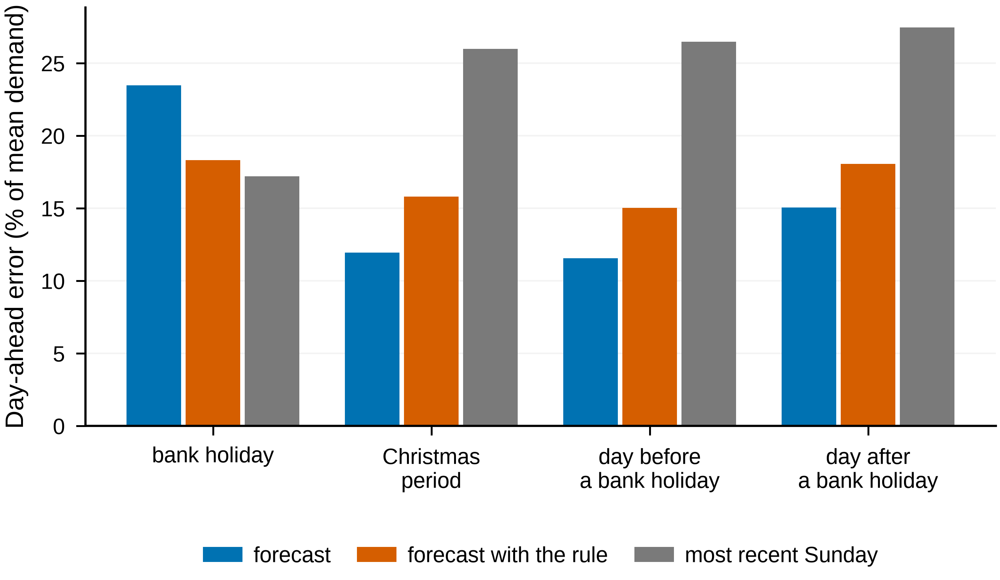
special_days PDFTable: 30 rows
| model | kind | sites_group | sites | site_days | days | nmae_forecast_pct | nmae_rule_half_hour_pct | nmae_rule_day_pct | nmae_sunday_pct | rule_minus_forecast_pts | lo | hi | median_bias_forecast_pct |
|---|---|---|---|---|---|---|---|---|---|---|---|---|---|
| chronos2 | all special days | all sites | 91 | 4666 | 53 | 19.44 | 17.61 | 19.52 | 24.23 | -1.84 | -3.15 | -0.62 | 0.1 |
| chronos2 | all special days | no on-site generation | 79 | 4073 | 53 | 18.99 | 16.81 | 18.65 | 23.6 | -2.18 | -3.54 | -0.85 | 0.1 |
| chronos2 | all special days | on-site generation | 12 | 593 | 53 | 22.43 | 22.9 | 25.25 | 28.38 | 0.46 | -1.97 | 2.63 | 0.34 |
| chronos2 | Christmas period | all sites | 91 | 1271 | 14 | 14.72 | 18.23 | 18.01 | 25.99 | 3.51 | 2.83 | 4.21 | -1.64 |
| chronos2 | Christmas period | no on-site generation | 79 | 1104 | 14 | 13.81 | 17.15 | 16.84 | 25.48 | 3.33 | 2.78 | 3.96 | -1.59 |
| chronos2 | Christmas period | on-site generation | 12 | 167 | 14 | 20.72 | 25.39 | 25.71 | 29.39 | 4.67 | 2.28 | 7.57 | -1.92 |
| chronos2 | bank holiday | all sites | 91 | 1651 | 19 | 32.34 | 17.8 | 23.61 | 17.22 | -14.55 | -20.34 | -9.25 | 12.05 |
| chronos2 | bank holiday | no on-site generation | 79 | 1448 | 19 | 32.67 | 17.37 | 23.43 | 15.96 | -15.3 | -21.76 | -9.85 | 11.61 |
| chronos2 | bank holiday | on-site generation | 12 | 203 | 19 | 30.2 | 20.61 | 24.75 | 25.49 | -9.59 | -16.35 | -3.36 | 17.14 |
| chronos2 | day after a bank holiday | all sites | 91 | 878 | 10 | 20.73 | 19.53 | 22.71 | 27.48 | -1.2 | -2.41 | -0.03 | -10.92 |
| chronos2 | day after a bank holiday | no on-site generation | 79 | 766 | 10 | 20.24 | 18.91 | 21.77 | 27.41 | -1.34 | -2.65 | -0.07 | -10.65 |
| chronos2 | day after a bank holiday | on-site generation | 12 | 112 | 10 | 23.93 | 23.61 | 28.88 | 27.91 | -0.32 | -3.66 | 2.82 | -12.72 |
| chronos2 | day before a bank holiday | all sites | 91 | 866 | 10 | 11.76 | 15.48 | 14.47 | 26.48 | 3.72 | 3.15 | 4.29 | 0.1 |
| chronos2 | day before a bank holiday | no on-site generation | 79 | 755 | 10 | 11.37 | 14.82 | 13.48 | 25.75 | 3.45 | 2.99 | 3.95 | 0.1 |
| chronos2 | day before a bank holiday | on-site generation | 12 | 111 | 10 | 14.32 | 19.8 | 20.98 | 31.32 | 5.48 | 2.88 | 8.29 | -0.08 |
| chronos2_ifs | all special days | all sites | 91 | 4666 | 53 | 15.13 | 16.63 | 16.82 | 24.23 | 1.49 | 0.87 | 2.11 | 0.1 |
| chronos2_ifs | all special days | no on-site generation | 79 | 4073 | 53 | 14.6 | 15.81 | 15.82 | 23.6 | 1.21 | 0.59 | 1.79 | 0.1 |
| chronos2_ifs | all special days | on-site generation | 12 | 593 | 53 | 18.67 | 22.02 | 23.39 | 28.38 | 3.35 | 1.23 | 5.64 | 0 |
| chronos2_ifs | Christmas period | all sites | 91 | 1271 | 14 | 11.94 | 15.81 | 15.06 | 25.99 | 3.87 | 3.17 | 4.7 | -0.96 |
| chronos2_ifs | Christmas period | no on-site generation | 79 | 1104 | 14 | 11.24 | 14.74 | 13.82 | 25.48 | 3.5 | 2.96 | 4.06 | -0.91 |
| chronos2_ifs | Christmas period | on-site generation | 12 | 167 | 14 | 16.53 | 22.83 | 23.25 | 29.39 | 6.3 | 2.86 | 11.15 | -1.33 |
| chronos2_ifs | bank holiday | all sites | 91 | 1651 | 19 | 23.48 | 18.31 | 21.02 | 17.22 | -5.17 | -8.21 | -2.37 | 5.06 |
| chronos2_ifs | bank holiday | no on-site generation | 79 | 1448 | 19 | 23.21 | 17.8 | 20.6 | 15.96 | -5.41 | -8.93 | -2.57 | 4.69 |
| chronos2_ifs | bank holiday | on-site generation | 12 | 203 | 19 | 25.28 | 21.69 | 23.75 | 25.49 | -3.6 | -6.89 | -0.37 | 10.82 |
| chronos2_ifs | day after a bank holiday | all sites | 91 | 878 | 10 | 15.07 | 18.05 | 18.04 | 27.48 | 2.98 | 2.35 | 3.61 | -5 |
| chronos2_ifs | day after a bank holiday | no on-site generation | 79 | 766 | 10 | 14.35 | 17.18 | 16.63 | 27.41 | 2.83 | 2.25 | 3.47 | -4.96 |
| chronos2_ifs | day after a bank holiday | on-site generation | 12 | 112 | 10 | 19.8 | 23.79 | 27.34 | 27.91 | 4 | 1.63 | 6.65 | -5.29 |
| chronos2_ifs | day before a bank holiday | all sites | 91 | 866 | 10 | 11.56 | 15.04 | 13.84 | 26.48 | 3.48 | 3 | 4.03 | 0.51 |
| chronos2_ifs | day before a bank holiday | no on-site generation | 79 | 755 | 10 | 11.28 | 14.59 | 13.14 | 25.75 | 3.31 | 2.86 | 3.8 | 0.57 |
| chronos2_ifs | day before a bank holiday | on-site generation | 12 | 111 | 10 | 13.37 | 18.04 | 18.43 | 31.32 | 4.66 | 2.56 | 6.99 | -0.48 |
source: code/reports/special_days/scores.csv (30 rows shown)
- Bank holidays are where the forecast fails: 23.5 % error with the calendar as an input (32.3 % without), against about 11 % on ordinary days, and the forecast is too high (+5 % and +12 %). The rule brings it to 18.3 % (−5.2 points, −8.2 to −2.4). The load of the most recent Sunday does as well (17.2 %).
- The days next to a holiday and the Christmas period are not anomalous at these sites: 11.6 to 15.1 % error. There the rule adds the noise of one past day and makes the forecast worse by 3 to 4 points. The rule is for bank holidays only.
- By holiday (
scores_by_name.csv): the gain is on Christmas Day, Good Friday, New Year's Day and the late summer bank holiday (29 to 36 % error down to 17 to 21 %). On Easter Monday, May Day, the spring bank holiday and Boxing Day the forecast is already at 12 to 20 % and the rule does not help. - Over all days bank holidays are 2.3 % of days and 2.8 % of the error; the rule lowers the error of all days from 11.33 to 11.27 % (−0.06 points, −0.09 to −0.03).
| model | sites | site_days | special_share_of_days_pct | special_share_of_error_pct | holiday_share_of_days_pct | holiday_share_of_error_pct | nmae_all_days_pct | nmae_rule_on_bank_holidays_pct | nmae_rule_on_all_special_days_pct | holiday_rule_change_pts | lo | hi |
|---|---|---|---|---|---|---|---|---|---|---|---|---|
| chronos2 | 91 | 76009 | 6.42 | 8.81 | 2.31 | 3.36 | 12.01 | 11.82 | 11.91 | -0.19 | -0.25 | -0.13 |
| chronos2_ifs | 91 | 76009 | 6.42 | 7.31 | 2.31 | 2.84 | 11.33 | 11.27 | 11.42 | -0.06 | -0.09 | -0.03 |
source: code/reports/special_days/overall.csv (2 rows shown)
The rule on all days, normal days, special days and proximity days (added 22 November 2026;
day_classes.csv). Arora and Taylor score a rule for special days on four sets of days. Here:
special days are the bank holidays and the Christmas period (24 and 27 to 31 December, 2
January); proximity days are the working day before and the working day after a bank holiday;
all other days are normal days. Three policies say where the rule is applied; a day outside
the policy keeps the forecast, so the normal days are the same with and without the rule.
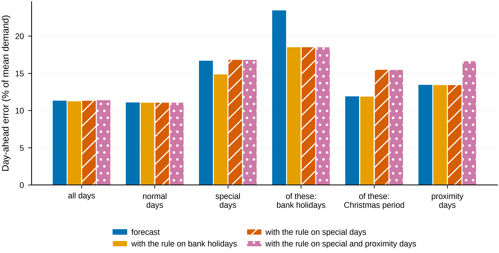
special_day_classes PDFTable: 36 rows
| model | policy | day_class | site_days | days | share_of_days_pct | share_of_error_pct | rule_applied_pct | nmae_forecast_pct | nmae_with_rule_pct | rule_minus_forecast_pts | lo | hi |
|---|---|---|---|---|---|---|---|---|---|---|---|---|
| chronos2 | rule on bank holidays | all days | 76009 | 855 | 100 | 100 | 2.17 | 12.01 | 11.82 | -0.19 | -0.25 | -0.13 |
| chronos2 | rule on bank holidays | normal days | 71136 | 800 | 93.59 | 91.22 | 0 | 11.52 | 11.52 | 0 | 0 | 0 |
| chronos2 | rule on bank holidays | special days | 3117 | 35 | 4.1 | 6.31 | 52.84 | 22.43 | 16.83 | -5.6 | -7.47 | -3.85 |
| chronos2 | rule on bank holidays | proximity days | 1756 | 20 | 2.31 | 2.47 | 0 | 16.45 | 16.45 | 0 | 0 | 0 |
| chronos2 | rule on bank holidays | bank holidays | 1755 | 20 | 2.31 | 3.35 | 93.85 | 32.53 | 18.76 | -13.78 | -19.33 | -8.75 |
| chronos2 | rule on bank holidays | Christmas period | 1362 | 15 | 1.79 | 2.96 | 0 | 15.4 | 15.4 | 0 | 0 | 0 |
| chronos2 | rule on special days | all days | 76009 | 855 | 100 | 100 | 3.84 | 12.01 | 11.89 | -0.12 | -0.18 | -0.06 |
| chronos2 | rule on special days | normal days | 71136 | 800 | 93.59 | 91.22 | 0 | 11.52 | 11.52 | 0 | 0 | 0 |
| chronos2 | rule on special days | special days | 3117 | 35 | 4.1 | 6.31 | 93.62 | 22.43 | 18.57 | -3.86 | -5.74 | -2.08 |
| chronos2 | rule on special days | proximity days | 1756 | 20 | 2.31 | 2.47 | 0 | 16.45 | 16.45 | 0 | 0 | 0 |
| chronos2 | rule on special days | bank holidays | 1755 | 20 | 2.31 | 3.35 | 93.85 | 32.53 | 18.76 | -13.78 | -19.33 | -8.75 |
| chronos2 | rule on special days | Christmas period | 1362 | 15 | 1.79 | 2.96 | 93.32 | 15.4 | 18.65 | 3.25 | 2.62 | 3.89 |
| chronos2 | rule on special and proximity days | all days | 76009 | 855 | 100 | 100 | 6.13 | 12.01 | 11.91 | -0.1 | -0.17 | -0.03 |
| chronos2 | rule on special and proximity days | normal days | 71136 | 800 | 93.59 | 91.22 | 0 | 11.52 | 11.52 | 0 | 0 | 0 |
| chronos2 | rule on special and proximity days | special days | 3117 | 35 | 4.1 | 6.31 | 93.62 | 22.43 | 18.57 | -3.86 | -5.74 | -2.08 |
| chronos2 | rule on special and proximity days | proximity days | 1756 | 20 | 2.31 | 2.47 | 98.97 | 16.45 | 17.64 | 1.2 | 0.45 | 1.9 |
| chronos2 | rule on special and proximity days | bank holidays | 1755 | 20 | 2.31 | 3.35 | 93.85 | 32.53 | 18.76 | -13.78 | -19.33 | -8.75 |
| chronos2 | rule on special and proximity days | Christmas period | 1362 | 15 | 1.79 | 2.96 | 93.32 | 15.4 | 18.65 | 3.25 | 2.62 | 3.89 |
| chronos2_ifs | rule on bank holidays | all days | 76009 | 855 | 100 | 100 | 2.17 | 11.33 | 11.27 | -0.06 | -0.09 | -0.03 |
| chronos2_ifs | rule on bank holidays | normal days | 71136 | 800 | 93.59 | 92.72 | 0 | 11.09 | 11.09 | 0 | 0 | 0 |
| chronos2_ifs | rule on bank holidays | special days | 3117 | 35 | 4.1 | 5.03 | 52.84 | 16.68 | 14.88 | -1.8 | -2.77 | -0.88 |
| chronos2_ifs | rule on bank holidays | proximity days | 1756 | 20 | 2.31 | 2.25 | 0 | 13.45 | 13.45 | 0 | 0 | 0 |
| chronos2_ifs | rule on bank holidays | bank holidays | 1755 | 20 | 2.31 | 2.83 | 93.85 | 23.46 | 18.53 | -4.93 | -7.84 | -2.25 |
| chronos2_ifs | rule on bank holidays | Christmas period | 1362 | 15 | 1.79 | 2.2 | 0 | 11.9 | 11.9 | 0 | 0 | 0 |
| chronos2_ifs | rule on special days | all days | 76009 | 855 | 100 | 100 | 3.84 | 11.33 | 11.35 | 0.02 | -0.02 | 0.05 |
| chronos2_ifs | rule on special days | normal days | 71136 | 800 | 93.59 | 92.72 | 0 | 11.09 | 11.09 | 0 | 0 | 0 |
| chronos2_ifs | rule on special days | special days | 3117 | 35 | 4.1 | 5.03 | 93.62 | 16.68 | 16.84 | 0.16 | -0.82 | 1.06 |
| chronos2_ifs | rule on special days | proximity days | 1756 | 20 | 2.31 | 2.25 | 0 | 13.45 | 13.45 | 0 | 0 | 0 |
| chronos2_ifs | rule on special days | bank holidays | 1755 | 20 | 2.31 | 2.83 | 93.85 | 23.46 | 18.53 | -4.93 | -7.84 | -2.25 |
| chronos2_ifs | rule on special days | Christmas period | 1362 | 15 | 1.79 | 2.2 | 93.32 | 11.9 | 15.49 | 3.59 | 2.93 | 4.39 |
| chronos2_ifs | rule on special and proximity days | all days | 76009 | 855 | 100 | 100 | 6.13 | 11.33 | 11.42 | 0.09 | 0.05 | 0.13 |
| chronos2_ifs | rule on special and proximity days | normal days | 71136 | 800 | 93.59 | 92.72 | 0 | 11.09 | 11.09 | 0 | 0 | 0 |
| chronos2_ifs | rule on special and proximity days | special days | 3117 | 35 | 4.1 | 5.03 | 93.62 | 16.68 | 16.84 | 0.16 | -0.82 | 1.06 |
| chronos2_ifs | rule on special and proximity days | proximity days | 1756 | 20 | 2.31 | 2.25 | 98.97 | 13.45 | 16.65 | 3.21 | 2.7 | 3.73 |
| chronos2_ifs | rule on special and proximity days | bank holidays | 1755 | 20 | 2.31 | 2.83 | 93.85 | 23.46 | 18.53 | -4.93 | -7.84 | -2.25 |
| chronos2_ifs | rule on special and proximity days | Christmas period | 1362 | 15 | 1.79 | 2.2 | 93.32 | 11.9 | 15.49 | 3.59 | 2.93 | 4.39 |
source: code/reports/special_days/day_classes.csv (36 rows shown)
For the forecast with calendar and weather inputs (76,009 site-days on 855 days):
| Days | Share of days | Forecast | Rule on bank holidays | Rule on special days | Rule on special and proximity days |
|---|---|---|---|---|---|
| All days | 100 % | 11.33 % | 11.27 % (−0.06, −0.09 to −0.03) | 11.35 % (+0.02, −0.02 to +0.05) | 11.42 % (+0.09, 0.05 to 0.13) |
| Normal days | 93.6 % | 11.09 % | 11.09 % | 11.09 % | 11.09 % |
| Special days | 4.1 % | 16.68 % | 14.88 % (−1.80, −2.77 to −0.88) | 16.84 % (+0.16, −0.82 to +1.06) | 16.84 % |
| of these: bank holidays | 2.3 % | 23.46 % | 18.53 % (−4.93, −7.84 to −2.25) | 18.53 % | 18.53 % |
| of these: Christmas period | 1.8 % | 11.90 % | 11.90 % | 15.49 % (+3.59, 2.93 to 4.39) | 15.49 % |
| Proximity days | 2.3 % | 13.45 % | 13.45 % | 13.45 % | 16.65 % (+3.21, 2.70 to 3.73) |
- The rule works on the bank holidays and only there. Applied to the bank holidays it lowers the error of the special days by 1.8 points and the error of all days by 0.06 points; both intervals exclude zero.
- Applied to all special days it gains nothing (+0.16 points on the special days): the loss on the Christmas period cancels the gain on the bank holidays. The Christmas period is no anomaly at these sites (11.9 % error against 11.1 % on normal days), so one past day adds noise.
- Applied to the proximity days it does harm (+3.2 points). The proximity days are harder than normal days (13.5 % against 11.1 %), but the same day a year before does not say how.
- Without inputs the same pattern is larger: bank holidays 32.5 to 18.8 % (−13.8 points, −19.3 to −8.8), special days −5.6 points with the rule on bank holidays, all days −0.19 points (−0.25 to −0.13); Christmas period +3.3 and proximity days +1.2 points.
- A hospital is not the national grid: the national load of the two papers falls on the days around a holiday as well, and a hospital's does not. The policy for these sites is the rule on bank holidays.
Four extensions of the forecast (added 22 November 2026). Spoek et al. (2026) forecast
district heat load with zero-shot models and report four things that we had not tested: a
second model for the errors within the day, measured and forecast temperature as separate
inputs, trained baselines that are trained again when the data drift, and a forecast range
that fails in some seasons and hours. Each is tested here on the whole record. Runs:
forecast-extension-runs; scores: forecast-extensions and forecast-range
(analysis/forecast_extensions.py, analysis/forecast_range.py; tables in
code/reports/forecast_extensions/ and code/reports/forecast_range/).
1. A correction within the day. Every two hours on every third day of the record (400 days, 35,365 site-days) a second zero-shot model forecasts the next four half-hours of the error of the day-ahead forecast from the last week of errors, and the day-ahead forecast is corrected by it. The comparators see the same meter data: the last error carried forward, the last metered value carried forward, and the zero-shot model run again on the demand itself. All of them need the meter to be read in real time.
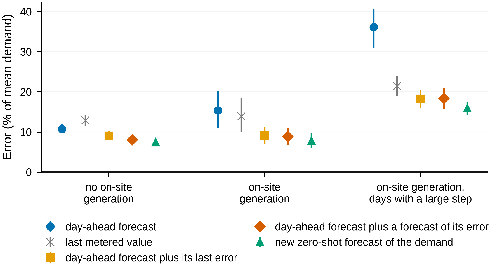
correction_groups PDF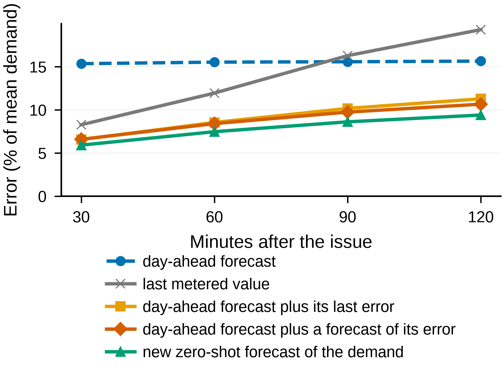
correction_steps PDFTable: 45 rows
| group | model | sites | site_days | days | nmae_pct | nmae_lo | nmae_hi |
|---|---|---|---|---|---|---|---|
| all | corrected | 91 | 35365 | 400 | 8.11 | 7.26 | 8.97 |
| all | day_ahead | 91 | 35365 | 400 | 11.32 | 10.12 | 12.52 |
| all | direct | 91 | 35365 | 400 | 7.51 | 6.73 | 8.3 |
| all | error_carried | 91 | 35365 | 400 | 9.05 | 8.07 | 10.06 |
| all | value_carried | 91 | 35365 | 400 | 13.02 | 11.79 | 14.26 |
| on-site generation | corrected | 12 | 4616 | 400 | 8.81 | 6.69 | 10.95 |
| on-site generation | day_ahead | 12 | 4616 | 400 | 15.36 | 10.9 | 20.19 |
| on-site generation | direct | 12 | 4616 | 400 | 7.83 | 5.99 | 9.64 |
| on-site generation | error_carried | 12 | 4616 | 400 | 9.11 | 6.99 | 11.2 |
| on-site generation | value_carried | 12 | 4616 | 400 | 13.9 | 9.91 | 18.49 |
| no on-site generation | corrected | 79 | 30749 | 400 | 8 | 7.1 | 8.95 |
| no on-site generation | day_ahead | 79 | 30749 | 400 | 10.71 | 9.65 | 11.91 |
| no on-site generation | direct | 79 | 30749 | 400 | 7.46 | 6.62 | 8.38 |
| no on-site generation | error_carried | 79 | 30749 | 400 | 9.04 | 8.01 | 10.15 |
| no on-site generation | value_carried | 79 | 30749 | 400 | 12.88 | 11.56 | 14.24 |
| on-site generation, days with a large step | corrected | 10 | 576 | 308 | 18.38 | 15.73 | 20.84 |
| on-site generation, days with a large step | day_ahead | 10 | 576 | 308 | 36.14 | 30.97 | 40.6 |
| on-site generation, days with a large step | direct | 10 | 576 | 308 | 15.97 | 14.11 | 17.59 |
| on-site generation, days with a large step | error_carried | 10 | 576 | 308 | 18.24 | 15.94 | 20.33 |
| on-site generation, days with a large step | value_carried | 10 | 576 | 308 | 21.36 | 19.05 | 23.97 |
| on-site generation, other days | corrected | 12 | 4040 | 400 | 6.93 | 5.5 | 8.3 |
| on-site generation, other days | day_ahead | 12 | 4040 | 400 | 11.58 | 8.84 | 14.29 |
| on-site generation, other days | direct | 12 | 4040 | 400 | 6.07 | 4.79 | 7.45 |
| on-site generation, other days | error_carried | 12 | 4040 | 400 | 7.37 | 5.88 | 8.89 |
| on-site generation, other days | value_carried | 12 | 4040 | 400 | 13 | 9.14 | 18.14 |
| 2023 | corrected | 91 | 9677 | 114 | 8.12 | 7.27 | 8.97 |
| 2023 | day_ahead | 91 | 9677 | 114 | 11.28 | 10.07 | 12.55 |
| 2023 | direct | 91 | 9677 | 114 | 7.51 | 6.75 | 8.29 |
| 2023 | error_carried | 91 | 9677 | 114 | 9.08 | 8.11 | 10.09 |
| 2023 | value_carried | 91 | 9677 | 114 | 12.98 | 11.75 | 14.23 |
| 2024 | corrected | 91 | 11048 | 122 | 8.11 | 7.23 | 9.05 |
| 2024 | day_ahead | 91 | 11048 | 122 | 11.37 | 10.12 | 12.75 |
| 2024 | direct | 91 | 11048 | 122 | 7.5 | 6.68 | 8.36 |
| 2024 | error_carried | 91 | 11048 | 122 | 9.04 | 8.01 | 10.18 |
| 2024 | value_carried | 91 | 11048 | 122 | 13.05 | 11.73 | 14.41 |
| 2025 | corrected | 91 | 10902 | 122 | 8.27 | 7.35 | 9.2 |
| 2025 | day_ahead | 91 | 10902 | 122 | 11.5 | 10.25 | 12.72 |
| 2025 | direct | 91 | 10902 | 122 | 7.69 | 6.84 | 8.54 |
| 2025 | error_carried | 91 | 10902 | 122 | 9.26 | 8.18 | 10.31 |
| 2025 | value_carried | 91 | 10902 | 122 | 13.27 | 11.97 | 14.56 |
| 2026 | corrected | 91 | 3738 | 42 | 8.2 | 7.27 | 9.17 |
| 2026 | day_ahead | 91 | 3738 | 42 | 11.4 | 10.07 | 12.69 |
| 2026 | direct | 91 | 3738 | 42 | 7.58 | 6.71 | 8.47 |
| 2026 | error_carried | 91 | 3738 | 42 | 9.12 | 8.08 | 10.23 |
| 2026 | value_carried | 91 | 3738 | 42 | 13.38 | 11.97 | 14.88 |
source: code/reports/forecast_extensions/correction_errors.csv (45 rows shown)
Table: 36 rows
| group | a | b | diff_pts | lo | hi | nmae_a_pct | nmae_b_pct |
|---|---|---|---|---|---|---|---|
| all | corrected | day_ahead | -3.22 | -3.4 | -3.04 | 8.11 | 11.32 |
| all | corrected | error_carried | -0.94 | -0.98 | -0.9 | 8.11 | 9.05 |
| all | corrected | direct | 0.6 | 0.56 | 0.64 | 8.11 | 7.51 |
| all | direct | day_ahead | -3.82 | -4.03 | -3.62 | 7.51 | 11.32 |
| on-site generation | corrected | day_ahead | -6.56 | -7.2 | -5.92 | 8.81 | 15.36 |
| on-site generation | corrected | error_carried | -0.3 | -0.4 | -0.2 | 8.81 | 9.11 |
| on-site generation | corrected | direct | 0.98 | 0.84 | 1.11 | 8.81 | 7.83 |
| on-site generation | direct | day_ahead | -7.53 | -8.23 | -6.86 | 7.83 | 15.36 |
| no on-site generation | corrected | day_ahead | -2.71 | -2.87 | -2.55 | 8 | 10.71 |
| no on-site generation | corrected | error_carried | -1.04 | -1.08 | -1 | 8 | 9.04 |
| no on-site generation | corrected | direct | 0.54 | 0.5 | 0.58 | 8 | 7.46 |
| no on-site generation | direct | day_ahead | -3.25 | -3.45 | -3.07 | 7.46 | 10.71 |
| on-site generation, days with a large step | corrected | day_ahead | -17.77 | -21.91 | -15.53 | 18.38 | 36.14 |
| on-site generation, days with a large step | corrected | error_carried | 0.14 | -0.3 | 0.55 | 18.38 | 18.24 |
| on-site generation, days with a large step | corrected | direct | 2.41 | 1.89 | 3.31 | 18.38 | 15.97 |
| on-site generation, days with a large step | direct | day_ahead | -20.17 | -25.04 | -17.77 | 15.97 | 36.14 |
| on-site generation, other days | corrected | day_ahead | -4.65 | -5.38 | -3.98 | 6.93 | 11.58 |
| on-site generation, other days | corrected | error_carried | -0.44 | -0.5 | -0.38 | 6.93 | 7.37 |
| on-site generation, other days | corrected | direct | 0.86 | 0.74 | 1 | 6.93 | 6.07 |
| on-site generation, other days | direct | day_ahead | -5.52 | -6.27 | -4.82 | 6.07 | 11.58 |
| 2023 | corrected | day_ahead | -3.16 | -3.5 | -2.86 | 8.12 | 11.28 |
| 2023 | corrected | error_carried | -0.96 | -1.03 | -0.9 | 8.12 | 9.08 |
| 2023 | corrected | direct | 0.61 | 0.53 | 0.71 | 8.12 | 7.51 |
| 2023 | direct | day_ahead | -3.78 | -4.2 | -3.43 | 7.51 | 11.28 |
| 2024 | corrected | day_ahead | -3.25 | -3.54 | -3 | 8.11 | 11.37 |
| 2024 | corrected | error_carried | -0.93 | -1 | -0.87 | 8.11 | 9.04 |
| 2024 | corrected | direct | 0.61 | 0.54 | 0.68 | 8.11 | 7.5 |
| 2024 | direct | day_ahead | -3.86 | -4.2 | -3.57 | 7.5 | 11.37 |
| 2025 | corrected | day_ahead | -3.23 | -3.58 | -2.9 | 8.27 | 11.5 |
| 2025 | corrected | error_carried | -0.99 | -1.08 | -0.89 | 8.27 | 9.26 |
| 2025 | corrected | direct | 0.58 | 0.52 | 0.66 | 8.27 | 7.69 |
| 2025 | direct | day_ahead | -3.81 | -4.19 | -3.47 | 7.69 | 11.5 |
| 2026 | corrected | day_ahead | -3.2 | -3.87 | -2.79 | 8.2 | 11.4 |
| 2026 | corrected | error_carried | -0.92 | -1.01 | -0.86 | 8.2 | 9.12 |
| 2026 | corrected | direct | 0.61 | 0.5 | 0.79 | 8.2 | 7.58 |
| 2026 | direct | day_ahead | -3.81 | -4.65 | -3.3 | 7.58 | 11.4 |
source: code/reports/forecast_extensions/correction_differences.csv (36 rows shown)
- Meter data from the same day cut the error by about 30 %. Day-ahead 11.3 %; corrected by the forecast of its error 8.1 % (−3.2 points, −3.4 to −3.0); the same in each of the four years (−3.2 to −3.3).
- At the sites with on-site generation the error falls by more than 40 %: 15.4 to 8.8 % (−6.6 points, −7.2 to −5.9), and on their days with a large step from 36.1 to 18.4 % (−17.8 points, −21.9 to −15.5). This is the first input that reaches the plant error: a flag for the plant and its state up to the day before did not (finding 4.7).
- The second model is not what helps. The zero-shot model run again on the demand is better than the correction by 0.6 points (0.56 to 0.64; 7.5 %), at every half-hour after the issue and in every site group. On the days with a large step the forecast of the error is no better than the last error carried forward (+0.1 points, −0.3 to +0.6). The gain is the meter reading, not the model of the errors.
- Not tested: what a battery gains when it plans again within the day, and how late the meter data of these sites arrive in practice.
2. Measured and forecast weather as separate inputs. The covariate run gives each weather variable one channel: measured values over the past, the forecast of the day before over the future, so the source changes at the issue time. Two alternatives on every third day of the record (402 days, 35,112 site-days): the measured value as a past-only input and the day-ahead forecast as a second input over past and future; and the day-ahead forecast only, over past and future. The history of forecasts is the run of the day before each day, as it was issued.
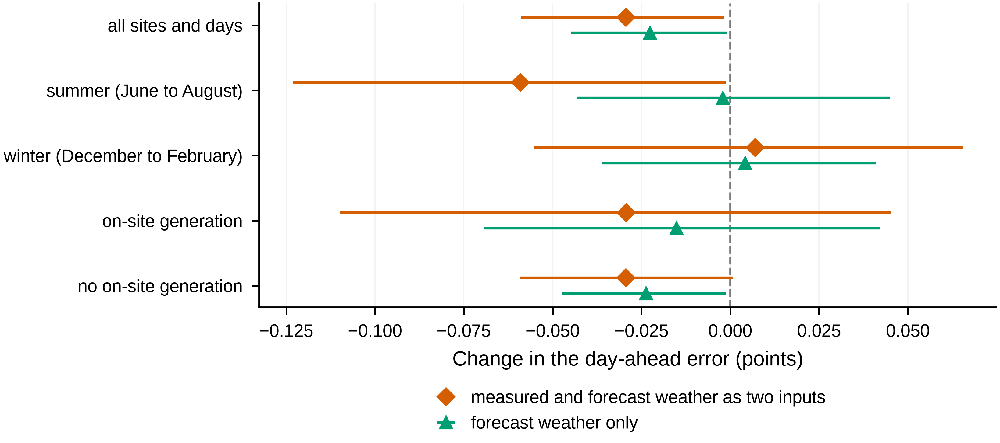
split_weather PDF| group | model | sites | site_days | days | nmae_pct | nmae_lo | nmae_hi |
|---|---|---|---|---|---|---|---|
| all | chronos2 | 91 | 35112 | 402 | 11.72 | 10.48 | 12.91 |
| all | chronos2_ifs | 91 | 35112 | 402 | 11.1 | 9.92 | 12.24 |
| all | chronos2_ifs_fc_only | 91 | 35112 | 402 | 11.08 | 9.9 | 12.21 |
| all | chronos2_ifs_split | 91 | 35112 | 402 | 11.08 | 9.9 | 12.21 |
| summer (June to August) | chronos2 | 91 | 8130 | 92 | 12.3 | 10.82 | 13.84 |
| summer (June to August) | chronos2_ifs | 91 | 8130 | 92 | 11.75 | 10.38 | 13.21 |
| summer (June to August) | chronos2_ifs_fc_only | 91 | 8130 | 92 | 11.75 | 10.37 | 13.21 |
| summer (June to August) | chronos2_ifs_split | 91 | 8130 | 92 | 11.69 | 10.32 | 13.16 |
| winter (December to February) | chronos2 | 91 | 8849 | 104 | 11.49 | 10.14 | 12.76 |
| winter (December to February) | chronos2_ifs | 91 | 8849 | 104 | 10.79 | 9.57 | 11.99 |
| winter (December to February) | chronos2_ifs_fc_only | 91 | 8849 | 104 | 10.79 | 9.58 | 11.99 |
| winter (December to February) | chronos2_ifs_split | 91 | 8849 | 104 | 10.8 | 9.58 | 11.98 |
| on-site generation | chronos2 | 12 | 4550 | 402 | 15.82 | 11.37 | 20.65 |
| on-site generation | chronos2_ifs | 12 | 4550 | 402 | 14.91 | 10.52 | 19.64 |
| on-site generation | chronos2_ifs_fc_only | 12 | 4550 | 402 | 14.89 | 10.49 | 19.61 |
| on-site generation | chronos2_ifs_split | 12 | 4550 | 402 | 14.88 | 10.47 | 19.59 |
| no on-site generation | chronos2 | 79 | 30562 | 402 | 11.1 | 10 | 12.27 |
| no on-site generation | chronos2_ifs | 79 | 30562 | 402 | 10.53 | 9.48 | 11.68 |
| no on-site generation | chronos2_ifs_fc_only | 79 | 30562 | 402 | 10.5 | 9.46 | 11.65 |
| no on-site generation | chronos2_ifs_split | 79 | 30562 | 402 | 10.5 | 9.46 | 11.65 |
source: code/reports/forecast_extensions/split_errors.csv (20 rows shown)
| group | a | b | diff_pts | lo | hi | nmae_a_pct | nmae_b_pct |
|---|---|---|---|---|---|---|---|
| all | chronos2_ifs_split | chronos2_ifs | -0.029 | -0.059 | -0.002 | 11.076 | 11.105 |
| all | chronos2_ifs_fc_only | chronos2_ifs | -0.023 | -0.045 | -0.001 | 11.082 | 11.105 |
| all | chronos2_ifs_split | chronos2_ifs_fc_only | -0.007 | -0.025 | 0.011 | 11.076 | 11.082 |
| summer (June to August) | chronos2_ifs_split | chronos2_ifs | -0.059 | -0.123 | -0.001 | 11.693 | 11.752 |
| summer (June to August) | chronos2_ifs_fc_only | chronos2_ifs | -0.002 | -0.043 | 0.045 | 11.75 | 11.752 |
| summer (June to August) | chronos2_ifs_split | chronos2_ifs_fc_only | -0.057 | -0.096 | -0.022 | 11.693 | 11.75 |
| winter (December to February) | chronos2_ifs_split | chronos2_ifs | 0.007 | -0.055 | 0.065 | 10.796 | 10.788 |
| winter (December to February) | chronos2_ifs_fc_only | chronos2_ifs | 0.004 | -0.036 | 0.041 | 10.793 | 10.788 |
| winter (December to February) | chronos2_ifs_split | chronos2_ifs_fc_only | 0.003 | -0.03 | 0.033 | 10.796 | 10.793 |
| on-site generation | chronos2_ifs_split | chronos2_ifs | -0.029 | -0.11 | 0.045 | 14.878 | 14.907 |
| on-site generation | chronos2_ifs_fc_only | chronos2_ifs | -0.015 | -0.069 | 0.042 | 14.892 | 14.907 |
| on-site generation | chronos2_ifs_split | chronos2_ifs_fc_only | -0.014 | -0.079 | 0.046 | 14.878 | 14.892 |
| no on-site generation | chronos2_ifs_split | chronos2_ifs | -0.029 | -0.059 | 0.001 | 10.498 | 10.527 |
| no on-site generation | chronos2_ifs_fc_only | chronos2_ifs | -0.024 | -0.047 | -0.001 | 10.504 | 10.527 |
| no on-site generation | chronos2_ifs_split | chronos2_ifs_fc_only | -0.006 | -0.023 | 0.012 | 10.498 | 10.504 |
source: code/reports/forecast_extensions/split_differences.csv (15 rows shown)
- No gain of a size that matters. Two inputs: 11.08 % against 11.10 % (−0.03 points, −0.06 to −0.00). Forecast only: −0.02 points (−0.05 to −0.00). All the inputs together are worth 0.62 points on these days, so the way the weather is given moves a twentieth of that.
- In summer the two-input form is ahead by 0.06 points (−0.12 to −0.00), in winter by nothing (+0.01, −0.06 to +0.07), and not at the sites with on-site generation.
- This agrees with finding 4.2: the forecast weather is as good as the measured weather for this model, so a change of source at the issue time costs it nothing.
3. The trained baseline, trained again. The gradient-boosted model of the proof of concept was trained once. Over a longer test a model that is trained once grows old, and a comparison with a model that needs no training is then unfair to it. Here the same model (LightGBM with the weather forecast, median only) is run from January 2024 to May 2026 in two ways: trained once on 2023, and trained again at the start of each quarter on all data up to then. A calendar replaces the drift detector of the paper: ten re-trainings in ten quarters are at least as many as a detector would start. 75,276 site-days on 856 days, 91 sites.
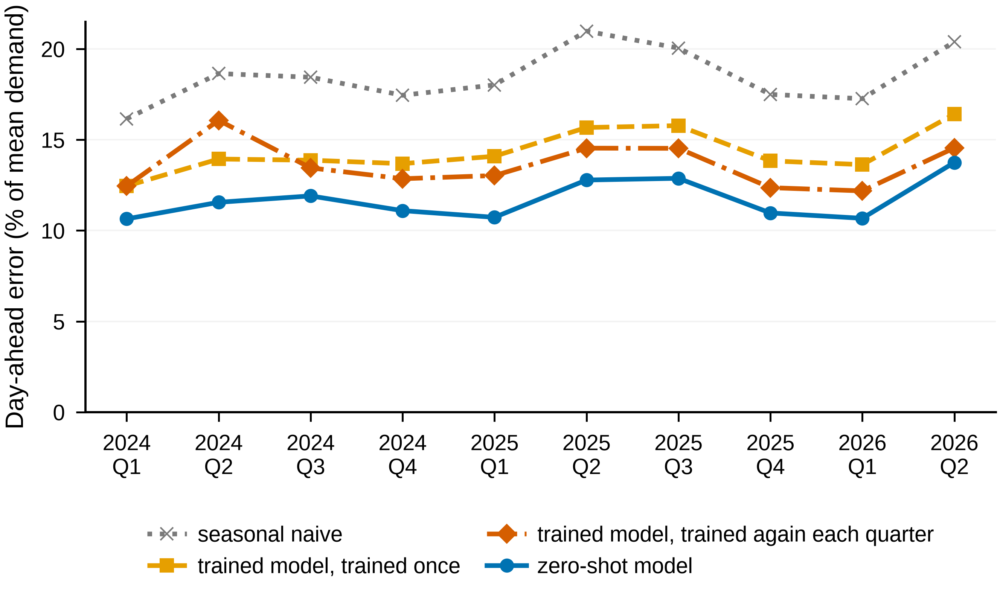
retrain_quarters PDF| group | model | sites | site_days | days | nmae_pct | nmae_lo | nmae_hi |
|---|---|---|---|---|---|---|---|
| all | chronos2_ifs | 91 | 75276 | 856 | 11.27 | 10.06 | 12.4 |
| all | lightgbm_once | 91 | 75276 | 856 | 13.93 | 12.39 | 15.52 |
| all | lightgbm_quarterly | 91 | 75276 | 856 | 13.33 | 11.8 | 14.91 |
| all | seasonal_naive | 91 | 75276 | 856 | 18.04 | 15.91 | 20.13 |
| 2024 | chronos2_ifs | 91 | 32586 | 365 | 11.22 | 10 | 12.53 |
| 2024 | lightgbm_once | 91 | 32586 | 365 | 13.5 | 11.94 | 15.22 |
| 2024 | lightgbm_quarterly | 91 | 32586 | 365 | 13.74 | 11.8 | 16.04 |
| 2024 | seasonal_naive | 91 | 32586 | 365 | 17.66 | 15.6 | 19.94 |
| 2025 | chronos2_ifs | 91 | 31738 | 364 | 11.52 | 10.27 | 12.74 |
| 2025 | lightgbm_once | 91 | 31738 | 364 | 14.54 | 12.82 | 16.18 |
| 2025 | lightgbm_quarterly | 91 | 31738 | 364 | 13.32 | 11.8 | 14.77 |
| 2025 | seasonal_naive | 91 | 31738 | 364 | 18.71 | 16.48 | 20.98 |
| 2026 | chronos2_ifs | 91 | 10952 | 127 | 11.2 | 9.93 | 12.39 |
| 2026 | lightgbm_once | 91 | 10952 | 127 | 14.02 | 12.3 | 15.6 |
| 2026 | lightgbm_quarterly | 91 | 10952 | 127 | 12.5 | 10.99 | 13.89 |
| 2026 | seasonal_naive | 91 | 10952 | 127 | 17.77 | 15.46 | 19.93 |
| on-site generation | chronos2_ifs | 12 | 9629 | 856 | 15.08 | 11.14 | 19.41 |
| on-site generation | lightgbm_once | 12 | 9629 | 856 | 20.71 | 14.7 | 27.4 |
| on-site generation | lightgbm_quarterly | 12 | 9629 | 856 | 21.27 | 14.19 | 29.56 |
| on-site generation | seasonal_naive | 12 | 9629 | 856 | 29.1 | 19.77 | 39.14 |
| no on-site generation | chronos2_ifs | 79 | 65647 | 856 | 10.69 | 9.59 | 11.88 |
| no on-site generation | lightgbm_once | 79 | 65647 | 856 | 12.9 | 11.62 | 14.35 |
| no on-site generation | lightgbm_quarterly | 79 | 65647 | 856 | 12.13 | 10.95 | 13.43 |
| no on-site generation | seasonal_naive | 79 | 65647 | 856 | 16.36 | 14.77 | 18.01 |
source: code/reports/forecast_extensions/retrain_errors.csv (24 rows shown)
| group | a | b | diff_pts | lo | hi | nmae_a_pct | nmae_b_pct |
|---|---|---|---|---|---|---|---|
| all | lightgbm_quarterly | lightgbm_once | -0.6 | -0.96 | -0.18 | 13.33 | 13.93 |
| all | chronos2_ifs | lightgbm_quarterly | -2.07 | -2.54 | -1.69 | 11.27 | 13.33 |
| all | chronos2_ifs | lightgbm_once | -2.67 | -2.86 | -2.47 | 11.27 | 13.93 |
| 2024 | lightgbm_quarterly | lightgbm_once | 0.24 | -0.4 | 1.2 | 13.74 | 13.5 |
| 2024 | chronos2_ifs | lightgbm_quarterly | -2.52 | -3.49 | -1.8 | 11.22 | 13.74 |
| 2024 | chronos2_ifs | lightgbm_once | -2.28 | -2.59 | -1.96 | 11.22 | 13.5 |
| 2025 | lightgbm_quarterly | lightgbm_once | -1.23 | -1.38 | -1.07 | 13.32 | 14.54 |
| 2025 | chronos2_ifs | lightgbm_quarterly | -1.79 | -2.01 | -1.57 | 11.52 | 13.32 |
| 2025 | chronos2_ifs | lightgbm_once | -3.02 | -3.26 | -2.77 | 11.52 | 14.54 |
| 2026 | lightgbm_quarterly | lightgbm_once | -1.52 | -1.87 | -1.18 | 12.5 | 14.02 |
| 2026 | chronos2_ifs | lightgbm_quarterly | -1.3 | -1.64 | -0.84 | 11.2 | 12.5 |
| 2026 | chronos2_ifs | lightgbm_once | -2.82 | -3.32 | -2.31 | 11.2 | 14.02 |
| on-site generation | lightgbm_quarterly | lightgbm_once | 0.56 | -1.74 | 3.62 | 21.27 | 20.71 |
| on-site generation | chronos2_ifs | lightgbm_quarterly | -6.19 | -9.48 | -3.81 | 15.08 | 21.27 |
| on-site generation | chronos2_ifs | lightgbm_once | -5.63 | -6.22 | -5.03 | 15.08 | 20.71 |
| no on-site generation | lightgbm_quarterly | lightgbm_once | -0.78 | -0.91 | -0.65 | 12.13 | 12.9 |
| no on-site generation | chronos2_ifs | lightgbm_quarterly | -1.44 | -1.6 | -1.28 | 10.69 | 12.13 |
| no on-site generation | chronos2_ifs | lightgbm_once | -2.22 | -2.41 | -2.02 | 10.69 | 12.9 |
source: code/reports/forecast_extensions/retrain_differences.csv (18 rows shown)
| a | b | sites | mean_diff_pts | median_diff_pts | sites_a_better | largest_diff_pts | largest_diff_site | mean_diff_without_it_pts |
|---|---|---|---|---|---|---|---|---|
| lightgbm_quarterly | lightgbm_once | 91 | -0.6 | -0.59 | 87 | 28.38 | RXN01 | -0.92 |
| chronos2_ifs | lightgbm_quarterly | 91 | -2.07 | -1.08 | 88 | 0.46 | RYX08 | -2.1 |
| chronos2_ifs | lightgbm_once | 91 | -2.67 | -1.89 | 91 | -0.04 | RYX08 | -2.7 |
source: code/reports/forecast_extensions/retrain_site_differences.csv (3 rows shown)
- The model trained once grows old: 13.5 % in 2024, 14.5 % in 2025, 14.0 % in 2026. Trained again each quarter it is better by 1.2 points in 2025 (−1.4 to −1.1) and by 1.5 points in 2026 (−1.9 to −1.2); over the whole test by 0.6 points (−1.0 to −0.2), at 87 of 91 sites.
- In 2024 re-training does not help (+0.2 points, −0.4 to +1.2): one site fails for two weeks in June 2024 after a re-training (its error over the test rises by 28 points). Without it the mean gain is 0.9 points; the median site gains 0.6.
- The zero-shot model stays ahead of the re-trained one in every quarter and every year: by 2.1 points over the whole test (−2.5 to −1.7), at 88 of 91 sites, and by 6.2 points at the sites with on-site generation. The lead narrows from 2.5 points in 2024 to 1.8 in 2025 and 1.3 in 2026 (−1.6 to −0.8), as the re-trained model gets more data. Whether it narrows further is open: 2026 has 127 days.
- The finding of the proof of concept holds (−1.5 points against a model trained on two years and tested on the year after): it is not a lead over a model that had grown old.
4. Where the forecast range fails, and an online correction. The forecast has a 10 % and a 90 % quantile; the demand should be inside them 80 % of the time, with 10 % below and 10 % above. Scored on 1,117 days (the first 90 days are left out for every method), 91 sites.
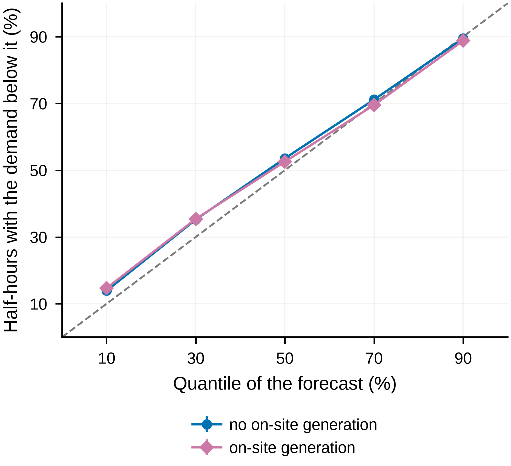
range_reliability PDF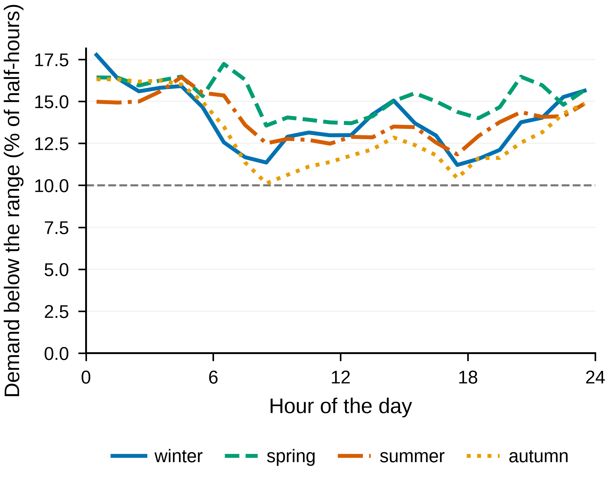
range_below_hours PDF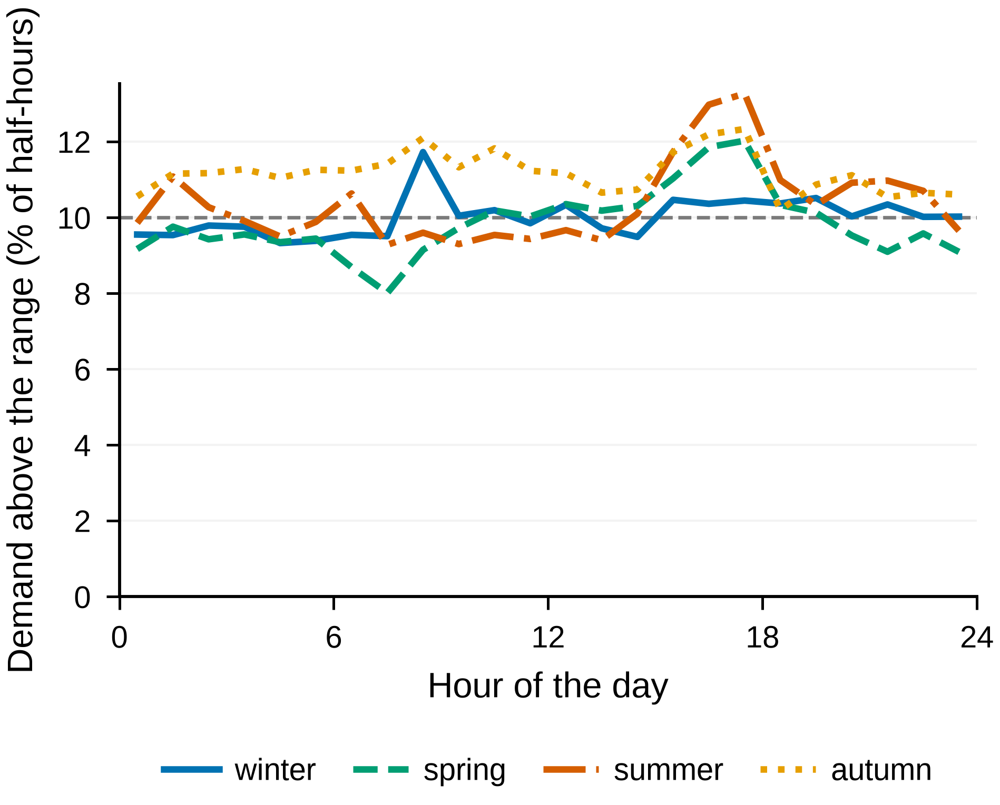
range_above_hours PDF- The range is too narrow, and the fault is at the lower bound. The demand is inside the range 75.7 % of the time (74.5 to 76.5), below it 14.0 % and above it 10.3 %. The lower bound fails in every season and hour, most at night (15 to 18 % below); the upper bound is right outside events. This is the opposite tail to the district-heating paper, which finds the upper quantile too low. The forecast without inputs shows the same (76.1 % inside).
- On event days the upper bound fails: 14.9 % of the half-hours above the range on heat-wave days and 13.8 % on cold-spell days, against 10.2 % on other days. This fits finding 4.5: on heat-wave days the peak is above what the forecast allows for.
- On bank holidays the lower bound fails: 23 % below the range (70 % inside).
- One site is inside its range 31 % of the time; 77 % of the sites are within five points of 80 %.
The correction follows Angelopoulos, Candes and Tibshirani (2023, conformal PID control). For each site, bound and half-hour of the day an offset moves out after a miss and in after a hit (quantile tracking), with the learning rate of the paper and with feedback as late as in operation (the half-hours after 16:00 learn from two days before). The comparator is a fixed rule on the scores of the last 90 days.
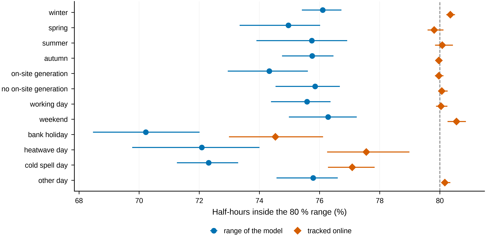
range_groups PDF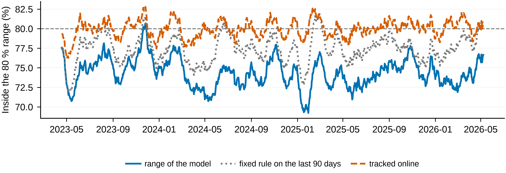
range_over_time PDFTable: 184 rows
| model | method | grouping | group | sites | below_pct | above_pct | inside_pct | inside_lo | inside_hi | width_pct | loss_pct |
|---|---|---|---|---|---|---|---|---|---|---|---|
| chronos2 | model | all | all | 91 | 12.9 | 11 | 76.1 | 74.7 | 77 | 33.9 | 5.9 |
| chronos2 | model | season | winter | 91 | 12.4 | 11 | 76.7 | 75.8 | 77.4 | 32.4 | 5.8 |
| chronos2 | model | season | spring | 91 | 14.7 | 10.1 | 75.2 | 73.6 | 76.4 | 34.6 | 6.2 |
| chronos2 | model | season | summer | 91 | 13.3 | 10.8 | 75.9 | 73.9 | 77.3 | 35.6 | 6 |
| chronos2 | model | season | autumn | 91 | 11.3 | 12.3 | 76.5 | 75.3 | 77.3 | 33.5 | 5.8 |
| chronos2 | model | time of day | 00:00-04:00 | 91 | 15.2 | 11.2 | 73.6 | 72.1 | 74.8 | 22.5 | 4.4 |
| chronos2 | model | time of day | 04:00-08:00 | 91 | 13.4 | 10.9 | 75.7 | 74.4 | 76.8 | 26.3 | 4.7 |
| chronos2 | model | time of day | 08:00-12:00 | 91 | 11.6 | 11.6 | 76.8 | 75.5 | 77.7 | 39.9 | 6.9 |
| chronos2 | model | time of day | 12:00-16:00 | 91 | 12.4 | 11.5 | 76.2 | 74.8 | 77.1 | 42.9 | 7.3 |
| chronos2 | model | time of day | 16:00-20:00 | 91 | 11.6 | 10.8 | 77.7 | 76.2 | 78.7 | 37.4 | 6.3 |
| chronos2 | model | time of day | 20:00-24:00 | 91 | 13.3 | 10.1 | 76.6 | 74.8 | 77.9 | 31.8 | 5.9 |
| chronos2 | model | site group | on-site generation | 12 | 13.4 | 10.9 | 75.8 | 74.4 | 76.9 | 41.7 | 9.4 |
| chronos2 | model | site group | no on-site generation | 79 | 12.8 | 11 | 76.1 | 74.6 | 77.2 | 32.7 | 5.4 |
| chronos2 | model | day type | working day | 91 | 11.9 | 11.8 | 76.3 | 74.9 | 77.2 | 33.7 | 5.8 |
| chronos2 | model | day type | weekend | 91 | 13.6 | 9.3 | 77 | 75.5 | 78.1 | 32.8 | 5.4 |
| chronos2 | model | day type | bank holiday | 91 | 36.1 | 6.1 | 57.8 | 55.1 | 60.5 | 52.3 | 19.4 |
| chronos2 | model | year | 2023 | 91 | 13 | 10.9 | 76.1 | 74.3 | 77.2 | 33.2 | 5.7 |
| chronos2 | model | year | 2024 | 91 | 12.9 | 11.1 | 76 | 74.4 | 77 | 33.8 | 6 |
| chronos2 | model | year | 2025 | 91 | 12.8 | 11.1 | 76.1 | 74.7 | 77.1 | 35 | 6.1 |
| chronos2 | model | year | 2026 | 91 | 13.2 | 10.4 | 76.3 | 75.7 | 77 | 33.7 | 6 |
| chronos2 | model | event | heatwave day | 81 | 10.8 | 16.6 | 72.6 | 70.1 | 74.7 | 36 | 6.3 |
| chronos2 | model | event | cold spell day | 90 | 7.9 | 19.3 | 72.8 | 71.7 | 73.9 | 32.3 | 6.5 |
| chronos2 | model | event | other day | 91 | 13.1 | 10.7 | 76.2 | 74.8 | 77.2 | 33.9 | 5.9 |
| chronos2 | rolling quantile | all | all | 91 | 11 | 11 | 77.9 | 77.7 | 78.2 | 35.8 | 6 |
| chronos2 | rolling quantile | season | winter | 91 | 11.7 | 10.4 | 77.9 | 77.7 | 78.2 | 34.4 | 5.9 |
| chronos2 | rolling quantile | season | spring | 91 | 11.8 | 10.6 | 77.6 | 77.1 | 78.2 | 36.2 | 6.3 |
| chronos2 | rolling quantile | season | summer | 91 | 10.2 | 11.4 | 78.4 | 78.1 | 78.8 | 37.6 | 6.1 |
| chronos2 | rolling quantile | season | autumn | 91 | 10.4 | 11.8 | 77.8 | 77.5 | 78.2 | 35.5 | 5.8 |
| chronos2 | rolling quantile | time of day | 00:00-04:00 | 91 | 10.9 | 11 | 78.1 | 77.9 | 78.4 | 24.9 | 4.4 |
| chronos2 | rolling quantile | time of day | 04:00-08:00 | 91 | 11 | 11.1 | 78 | 77.7 | 78.2 | 27.8 | 4.8 |
| chronos2 | rolling quantile | time of day | 08:00-12:00 | 91 | 11 | 10.9 | 78.1 | 77.9 | 78.4 | 42.4 | 6.9 |
| chronos2 | rolling quantile | time of day | 12:00-16:00 | 91 | 11.1 | 10.8 | 78.1 | 77.9 | 78.4 | 45.7 | 7.4 |
| chronos2 | rolling quantile | time of day | 16:00-20:00 | 91 | 11.2 | 11 | 77.7 | 77.5 | 78 | 38.5 | 6.4 |
| chronos2 | rolling quantile | time of day | 20:00-24:00 | 91 | 11.1 | 11.2 | 77.7 | 77.4 | 78 | 33.4 | 5.9 |
| chronos2 | rolling quantile | site group | on-site generation | 12 | 11.1 | 11.2 | 77.7 | 77.6 | 77.8 | 45.2 | 9.5 |
| chronos2 | rolling quantile | site group | no on-site generation | 79 | 11 | 11 | 78 | 77.8 | 78.3 | 34.3 | 5.4 |
| chronos2 | rolling quantile | day type | working day | 91 | 10 | 11.8 | 78.3 | 78 | 78.5 | 35.6 | 5.9 |
| chronos2 | rolling quantile | day type | weekend | 91 | 11.9 | 9.5 | 78.6 | 78.2 | 79.1 | 34.6 | 5.5 |
| chronos2 | rolling quantile | day type | bank holiday | 91 | 33.7 | 6.3 | 60 | 57.4 | 62.6 | 54.5 | 19.3 |
| chronos2 | rolling quantile | year | 2023 | 91 | 10.8 | 11.2 | 78 | 77.9 | 78.2 | 34.9 | 5.8 |
| chronos2 | rolling quantile | year | 2024 | 91 | 11 | 11 | 78 | 77.7 | 78.5 | 35.8 | 6 |
| chronos2 | rolling quantile | year | 2025 | 91 | 11 | 11.1 | 77.8 | 77.6 | 78.2 | 37 | 6.2 |
| chronos2 | rolling quantile | year | 2026 | 91 | 11.7 | 10.4 | 77.8 | 77.6 | 78.1 | 35.7 | 6 |
| chronos2 | rolling quantile | event | heatwave day | 81 | 7.8 | 16.5 | 75.8 | 74.3 | 77.2 | 38.1 | 6.4 |
| chronos2 | rolling quantile | event | cold spell day | 90 | 7.5 | 18 | 74.5 | 73.6 | 75.4 | 34.4 | 6.4 |
| chronos2 | rolling quantile | event | other day | 91 | 11.2 | 10.8 | 78.1 | 77.9 | 78.4 | 35.8 | 6 |
| chronos2 | quantile tracking | all | all | 91 | 10 | 9.9 | 80 | 79.9 | 80.2 | 38.8 | 6.1 |
| chronos2 | quantile tracking | season | winter | 91 | 10.3 | 9.4 | 80.3 | 80.2 | 80.5 | 37.7 | 6 |
| chronos2 | quantile tracking | season | spring | 91 | 10.4 | 10 | 79.7 | 79.4 | 80 | 39.3 | 6.4 |
| chronos2 | quantile tracking | season | summer | 91 | 9.7 | 10.1 | 80.2 | 80 | 80.6 | 40.4 | 6.3 |
| chronos2 | quantile tracking | season | autumn | 91 | 9.7 | 10.3 | 79.9 | 79.8 | 80.1 | 38.6 | 6 |
| chronos2 | quantile tracking | time of day | 00:00-04:00 | 91 | 9.9 | 9.9 | 80.2 | 80 | 80.3 | 29 | 4.7 |
| chronos2 | quantile tracking | time of day | 04:00-08:00 | 91 | 10 | 9.9 | 80.1 | 80 | 80.3 | 31.3 | 5 |
| chronos2 | quantile tracking | time of day | 08:00-12:00 | 91 | 10.1 | 9.9 | 79.9 | 79.8 | 80.1 | 44.7 | 7 |
| chronos2 | quantile tracking | time of day | 12:00-16:00 | 91 | 10.2 | 10 | 79.8 | 79.7 | 80 | 48 | 7.4 |
| chronos2 | quantile tracking | time of day | 16:00-20:00 | 91 | 10.1 | 9.9 | 80 | 79.9 | 80.3 | 41.9 | 6.6 |
| chronos2 | quantile tracking | time of day | 20:00-24:00 | 91 | 9.9 | 9.9 | 80.2 | 80 | 80.4 | 38.8 | 6.3 |
| chronos2 | quantile tracking | site group | on-site generation | 12 | 10.1 | 10 | 80 | 79.8 | 80.1 | 50.2 | 9.8 |
| chronos2 | quantile tracking | site group | no on-site generation | 79 | 10 | 9.9 | 80 | 79.9 | 80.3 | 37.1 | 5.6 |
| chronos2 | quantile tracking | day type | working day | 91 | 9.2 | 10.6 | 80.2 | 80 | 80.4 | 38.7 | 6 |
| chronos2 | quantile tracking | day type | weekend | 91 | 10.5 | 8.4 | 81 | 80.7 | 81.4 | 37.7 | 5.7 |
| chronos2 | quantile tracking | day type | bank holiday | 91 | 31 | 6.2 | 62.8 | 60.2 | 65.3 | 59 | 19 |
| chronos2 | quantile tracking | year | 2023 | 91 | 10 | 10.1 | 79.9 | 79.8 | 80 | 37.8 | 5.9 |
| chronos2 | quantile tracking | year | 2024 | 91 | 10 | 9.9 | 80.1 | 79.9 | 80.3 | 38.8 | 6.2 |
| chronos2 | quantile tracking | year | 2025 | 91 | 10 | 9.9 | 80.1 | 79.9 | 80.4 | 40.3 | 6.3 |
| chronos2 | quantile tracking | year | 2026 | 91 | 10.3 | 9.7 | 80 | 79.8 | 80.1 | 38.8 | 6.2 |
| chronos2 | quantile tracking | event | heatwave day | 81 | 7.4 | 14.4 | 78.2 | 76.8 | 79.5 | 40.9 | 6.5 |
| chronos2 | quantile tracking | event | cold spell day | 90 | 6.5 | 15.5 | 78.1 | 77.3 | 78.8 | 38.4 | 6.5 |
| chronos2 | quantile tracking | event | other day | 91 | 10.2 | 9.7 | 80.1 | 80 | 80.3 | 38.9 | 6.1 |
| chronos2 | tracking with integrator | all | all | 91 | 10 | 10 | 80 | 79.9 | 80.2 | 40 | 6.3 |
| chronos2 | tracking with integrator | season | winter | 91 | 10.2 | 9.5 | 80.4 | 80.2 | 80.6 | 38.7 | 6.1 |
| chronos2 | tracking with integrator | season | spring | 91 | 10.3 | 10 | 79.7 | 79.5 | 80.1 | 40.8 | 6.6 |
| chronos2 | tracking with integrator | season | summer | 91 | 9.8 | 10 | 80.1 | 79.9 | 80.4 | 41.6 | 6.4 |
| chronos2 | tracking with integrator | season | autumn | 91 | 9.8 | 10.4 | 79.8 | 79.7 | 80 | 39.6 | 6.1 |
| chronos2 | tracking with integrator | time of day | 00:00-04:00 | 91 | 9.9 | 9.9 | 80.2 | 80 | 80.4 | 30.4 | 4.8 |
| chronos2 | tracking with integrator | time of day | 04:00-08:00 | 91 | 10 | 9.9 | 80.1 | 80 | 80.4 | 32.4 | 5.1 |
| chronos2 | tracking with integrator | time of day | 08:00-12:00 | 91 | 10.1 | 10 | 79.9 | 79.8 | 80.1 | 45.4 | 7.1 |
| chronos2 | tracking with integrator | time of day | 12:00-16:00 | 91 | 10.2 | 10.1 | 79.7 | 79.6 | 79.8 | 49.2 | 7.6 |
| chronos2 | tracking with integrator | time of day | 16:00-20:00 | 91 | 10.1 | 10 | 80 | 79.8 | 80.2 | 43.3 | 6.7 |
| chronos2 | tracking with integrator | time of day | 20:00-24:00 | 91 | 9.9 | 9.9 | 80.2 | 80 | 80.5 | 40.8 | 6.5 |
| chronos2 | tracking with integrator | site group | on-site generation | 12 | 10.1 | 10 | 79.9 | 79.8 | 80 | 51.6 | 9.9 |
| chronos2 | tracking with integrator | site group | no on-site generation | 79 | 10 | 10 | 80 | 79.9 | 80.2 | 38.3 | 5.7 |
| chronos2 | tracking with integrator | day type | working day | 91 | 9.2 | 10.7 | 80.2 | 80 | 80.4 | 39.9 | 6.1 |
| chronos2 | tracking with integrator | day type | weekend | 91 | 10.4 | 8.5 | 81 | 80.7 | 81.4 | 38.9 | 5.8 |
| chronos2 | tracking with integrator | day type | bank holiday | 91 | 30.7 | 6.3 | 63 | 60.4 | 65.5 | 61 | 19 |
| chronos2 | tracking with integrator | year | 2023 | 91 | 10 | 10.1 | 79.9 | 79.8 | 80 | 39.4 | 6.1 |
| chronos2 | tracking with integrator | year | 2024 | 91 | 10 | 9.9 | 80 | 79.9 | 80.2 | 39.6 | 6.3 |
| chronos2 | tracking with integrator | year | 2025 | 91 | 9.9 | 10 | 80.1 | 79.9 | 80.3 | 41.6 | 6.5 |
| chronos2 | tracking with integrator | year | 2026 | 91 | 10.2 | 9.7 | 80.1 | 79.8 | 80.5 | 40.1 | 6.3 |
| chronos2 | tracking with integrator | event | heatwave day | 81 | 7.4 | 14 | 78.6 | 77.4 | 79.9 | 42.5 | 6.6 |
| chronos2 | tracking with integrator | event | cold spell day | 90 | 6.4 | 15.3 | 78.4 | 77.6 | 79.1 | 39.7 | 6.6 |
| chronos2 | tracking with integrator | event | other day | 91 | 10.2 | 9.8 | 80.1 | 80 | 80.3 | 40 | 6.2 |
| chronos2_ifs | model | all | all | 91 | 14 | 10.3 | 75.7 | 74.5 | 76.5 | 32.7 | 5.7 |
| chronos2_ifs | model | season | winter | 91 | 13.9 | 10 | 76.1 | 75.4 | 76.7 | 31.1 | 5.5 |
| chronos2_ifs | model | season | spring | 91 | 15.2 | 9.8 | 75 | 73.3 | 76 | 33.2 | 5.8 |
| chronos2_ifs | model | season | summer | 91 | 13.9 | 10.4 | 75.7 | 73.9 | 76.9 | 34.7 | 5.9 |
| chronos2_ifs | model | season | autumn | 91 | 13.1 | 11.2 | 75.8 | 74.8 | 76.5 | 33 | 5.7 |
| chronos2_ifs | model | time of day | 00:00-04:00 | 91 | 16 | 10.1 | 73.9 | 72.6 | 74.9 | 22.6 | 4.5 |
| chronos2_ifs | model | time of day | 04:00-08:00 | 91 | 14.8 | 9.8 | 75.4 | 74.2 | 76.3 | 26.2 | 4.8 |
| chronos2_ifs | model | time of day | 08:00-12:00 | 91 | 12.5 | 10.3 | 77.2 | 76.1 | 78 | 38.7 | 6.4 |
| chronos2_ifs | model | time of day | 12:00-16:00 | 91 | 13.5 | 10.4 | 76 | 74.9 | 76.9 | 41 | 6.8 |
| chronos2_ifs | model | time of day | 16:00-20:00 | 91 | 12.6 | 11.2 | 76.2 | 74.8 | 77.2 | 35.4 | 6.1 |
| chronos2_ifs | model | time of day | 20:00-24:00 | 91 | 14.6 | 10.2 | 75.2 | 73.9 | 76.2 | 31.3 | 5.9 |
| chronos2_ifs | model | site group | on-site generation | 12 | 14.7 | 11 | 74.3 | 72.9 | 75.6 | 39.1 | 9.2 |
| chronos2_ifs | model | site group | no on-site generation | 79 | 13.9 | 10.2 | 75.9 | 74.5 | 76.7 | 31.8 | 5.2 |
| chronos2_ifs | model | day type | working day | 91 | 13.5 | 10.9 | 75.6 | 74.4 | 76.4 | 32.6 | 5.7 |
| chronos2_ifs | model | day type | weekend | 91 | 14.4 | 9.3 | 76.3 | 75 | 77.2 | 31.4 | 5.4 |
| chronos2_ifs | model | day type | bank holiday | 91 | 23.2 | 6.6 | 70.2 | 68.5 | 72 | 56.2 | 13.2 |
| chronos2_ifs | model | year | 2023 | 91 | 13.9 | 10 | 76.1 | 74.7 | 77.1 | 32.9 | 5.6 |
| chronos2_ifs | model | year | 2024 | 91 | 14 | 10.4 | 75.6 | 74.1 | 76.6 | 32.8 | 5.7 |
| chronos2_ifs | model | year | 2025 | 91 | 13.9 | 10.8 | 75.3 | 74.1 | 76.2 | 33.3 | 5.9 |
| chronos2_ifs | model | year | 2026 | 91 | 14.5 | 9.7 | 75.8 | 75.2 | 76.4 | 32.6 | 5.7 |
| chronos2_ifs | model | event | heatwave day | 81 | 13 | 14.9 | 72.1 | 69.8 | 74 | 33.7 | 6 |
| chronos2_ifs | model | event | cold spell day | 90 | 13.9 | 13.8 | 72.3 | 71.3 | 73.3 | 30 | 5.9 |
| chronos2_ifs | model | event | other day | 91 | 14 | 10.2 | 75.8 | 74.6 | 76.6 | 32.9 | 5.7 |
| chronos2_ifs | rolling quantile | all | all | 91 | 11.1 | 11.2 | 77.7 | 77.5 | 78 | 34.1 | 5.7 |
| chronos2_ifs | rolling quantile | season | winter | 91 | 11.2 | 10.6 | 78.2 | 77.9 | 78.4 | 32.6 | 5.6 |
| chronos2_ifs | rolling quantile | season | spring | 91 | 11.5 | 11.3 | 77.3 | 76.8 | 77.8 | 34.5 | 5.8 |
| chronos2_ifs | rolling quantile | season | summer | 91 | 10.5 | 11.5 | 78.1 | 77.7 | 78.5 | 36 | 5.9 |
| chronos2_ifs | rolling quantile | season | autumn | 91 | 11.1 | 11.4 | 77.5 | 77.2 | 78 | 34.4 | 5.7 |
| chronos2_ifs | rolling quantile | time of day | 00:00-04:00 | 91 | 11 | 11.1 | 78 | 77.7 | 78.3 | 24.8 | 4.4 |
| chronos2_ifs | rolling quantile | time of day | 04:00-08:00 | 91 | 11 | 11.2 | 77.8 | 77.5 | 78.1 | 27.4 | 4.8 |
| chronos2_ifs | rolling quantile | time of day | 08:00-12:00 | 91 | 11 | 11.1 | 77.9 | 77.6 | 78.2 | 39.7 | 6.5 |
| chronos2_ifs | rolling quantile | time of day | 12:00-16:00 | 91 | 11.1 | 11.1 | 77.9 | 77.6 | 78.2 | 42.4 | 6.9 |
| chronos2_ifs | rolling quantile | time of day | 16:00-20:00 | 91 | 11.2 | 11.3 | 77.6 | 77.4 | 77.9 | 36.7 | 6.2 |
| chronos2_ifs | rolling quantile | time of day | 20:00-24:00 | 91 | 11.2 | 11.3 | 77.5 | 77.2 | 77.8 | 32.9 | 5.9 |
| chronos2_ifs | rolling quantile | site group | on-site generation | 12 | 11.2 | 11.4 | 77.4 | 77.1 | 77.7 | 41.9 | 9.3 |
| chronos2_ifs | rolling quantile | site group | no on-site generation | 79 | 11 | 11.2 | 77.8 | 77.6 | 78.1 | 32.9 | 5.2 |
| chronos2_ifs | rolling quantile | day type | working day | 91 | 10.5 | 11.7 | 77.8 | 77.6 | 78.1 | 34 | 5.7 |
| chronos2_ifs | rolling quantile | day type | weekend | 91 | 11.7 | 10.3 | 78 | 77.6 | 78.4 | 32.7 | 5.4 |
| chronos2_ifs | rolling quantile | day type | bank holiday | 91 | 20.3 | 7.2 | 72.5 | 71 | 74.1 | 57.7 | 13 |
| chronos2_ifs | rolling quantile | year | 2023 | 91 | 11 | 11.4 | 77.6 | 77.4 | 77.8 | 33.7 | 5.6 |
| chronos2_ifs | rolling quantile | year | 2024 | 91 | 11 | 11.2 | 77.7 | 77.4 | 78.2 | 34.1 | 5.8 |
| chronos2_ifs | rolling quantile | year | 2025 | 91 | 11 | 11.3 | 77.7 | 77.3 | 78.1 | 35 | 5.9 |
| chronos2_ifs | rolling quantile | year | 2026 | 91 | 11.4 | 10.4 | 78.3 | 77.9 | 78.6 | 34.5 | 5.7 |
| chronos2_ifs | rolling quantile | event | heatwave day | 81 | 10 | 15.6 | 74.4 | 72.9 | 76 | 35 | 6.1 |
| chronos2_ifs | rolling quantile | event | cold spell day | 90 | 11.8 | 14.4 | 73.8 | 72.8 | 74.7 | 31.5 | 5.9 |
| chronos2_ifs | rolling quantile | event | other day | 91 | 11.1 | 11 | 77.9 | 77.7 | 78.2 | 34.2 | 5.7 |
| chronos2_ifs | quantile tracking | all | all | 91 | 10 | 10 | 80.1 | 80 | 80.2 | 37.3 | 5.9 |
| chronos2_ifs | quantile tracking | season | winter | 91 | 10 | 9.6 | 80.4 | 80.2 | 80.5 | 35.8 | 5.7 |
| chronos2_ifs | quantile tracking | season | spring | 91 | 10.1 | 10.1 | 79.8 | 79.6 | 80.1 | 37.6 | 6 |
| chronos2_ifs | quantile tracking | season | summer | 91 | 9.9 | 10 | 80.1 | 79.8 | 80.4 | 38.8 | 6.1 |
| chronos2_ifs | quantile tracking | season | autumn | 91 | 9.9 | 10.1 | 80 | 79.9 | 80.1 | 37.7 | 5.9 |
| chronos2_ifs | quantile tracking | time of day | 00:00-04:00 | 91 | 9.9 | 9.9 | 80.1 | 80 | 80.3 | 28.9 | 4.7 |
| chronos2_ifs | quantile tracking | time of day | 04:00-08:00 | 91 | 10 | 9.9 | 80.1 | 80 | 80.3 | 30.9 | 5 |
| chronos2_ifs | quantile tracking | time of day | 08:00-12:00 | 91 | 10 | 10 | 80 | 79.8 | 80.2 | 42.1 | 6.5 |
| chronos2_ifs | quantile tracking | time of day | 12:00-16:00 | 91 | 10 | 10 | 79.9 | 79.8 | 80.1 | 44.9 | 6.9 |
| chronos2_ifs | quantile tracking | time of day | 16:00-20:00 | 91 | 10 | 10 | 80.1 | 79.9 | 80.3 | 40.3 | 6.3 |
| chronos2_ifs | quantile tracking | time of day | 20:00-24:00 | 91 | 10 | 9.9 | 80.1 | 80 | 80.3 | 38.3 | 6.3 |
| chronos2_ifs | quantile tracking | site group | on-site generation | 12 | 10 | 10 | 80 | 79.8 | 80.1 | 47.2 | 9.5 |
| chronos2_ifs | quantile tracking | site group | no on-site generation | 79 | 10 | 9.9 | 80.1 | 80 | 80.3 | 35.8 | 5.3 |
| chronos2_ifs | quantile tracking | day type | working day | 91 | 9.6 | 10.4 | 80 | 79.9 | 80.3 | 37.1 | 5.8 |
| chronos2_ifs | quantile tracking | day type | weekend | 91 | 10.3 | 9.1 | 80.6 | 80.3 | 80.9 | 35.9 | 5.6 |
| chronos2_ifs | quantile tracking | day type | bank holiday | 91 | 18.8 | 6.6 | 74.5 | 73 | 76.1 | 61.7 | 13.1 |
| chronos2_ifs | quantile tracking | year | 2023 | 91 | 10 | 10.1 | 79.9 | 79.9 | 80 | 36.9 | 5.7 |
| chronos2_ifs | quantile tracking | year | 2024 | 91 | 9.9 | 10 | 80.1 | 79.9 | 80.3 | 37.1 | 5.9 |
| chronos2_ifs | quantile tracking | year | 2025 | 91 | 10 | 10 | 80 | 79.9 | 80.3 | 38.3 | 6.1 |
| chronos2_ifs | quantile tracking | year | 2026 | 91 | 10.2 | 9.5 | 80.3 | 80.2 | 80.5 | 37.5 | 5.9 |
| chronos2_ifs | quantile tracking | event | heatwave day | 81 | 9.2 | 13.3 | 77.6 | 76.3 | 79 | 38.4 | 6.2 |
| chronos2_ifs | quantile tracking | event | cold spell day | 90 | 10.1 | 12.8 | 77.1 | 76.3 | 77.8 | 35.4 | 6.1 |
| chronos2_ifs | quantile tracking | event | other day | 91 | 10 | 9.8 | 80.2 | 80.1 | 80.4 | 37.4 | 5.9 |
| chronos2_ifs | tracking with integrator | all | all | 91 | 10 | 10 | 80.1 | 80 | 80.2 | 38.4 | 6 |
| chronos2_ifs | tracking with integrator | season | winter | 91 | 10 | 9.7 | 80.3 | 80.2 | 80.6 | 36.7 | 5.8 |
| chronos2_ifs | tracking with integrator | season | spring | 91 | 10 | 10.1 | 79.9 | 79.7 | 80.3 | 39 | 6.1 |
| chronos2_ifs | tracking with integrator | season | summer | 91 | 9.9 | 10 | 80.1 | 79.8 | 80.3 | 40 | 6.2 |
| chronos2_ifs | tracking with integrator | season | autumn | 91 | 9.9 | 10.2 | 79.9 | 79.8 | 80 | 38.8 | 6 |
| chronos2_ifs | tracking with integrator | time of day | 00:00-04:00 | 91 | 9.9 | 9.9 | 80.2 | 80 | 80.4 | 30.2 | 4.8 |
| chronos2_ifs | tracking with integrator | time of day | 04:00-08:00 | 91 | 9.9 | 9.9 | 80.1 | 80 | 80.4 | 32 | 5.1 |
| chronos2_ifs | tracking with integrator | time of day | 08:00-12:00 | 91 | 10 | 10 | 80 | 79.9 | 80.3 | 42.8 | 6.6 |
| chronos2_ifs | tracking with integrator | time of day | 12:00-16:00 | 91 | 10 | 10.2 | 79.8 | 79.6 | 79.9 | 46.2 | 7.1 |
| chronos2_ifs | tracking with integrator | time of day | 16:00-20:00 | 91 | 10 | 9.9 | 80.1 | 79.9 | 80.4 | 41.4 | 6.4 |
| chronos2_ifs | tracking with integrator | time of day | 20:00-24:00 | 91 | 9.9 | 9.9 | 80.2 | 80 | 80.5 | 40.2 | 6.5 |
| chronos2_ifs | tracking with integrator | site group | on-site generation | 12 | 10 | 10.1 | 80 | 79.9 | 80.1 | 48.9 | 9.7 |
| chronos2_ifs | tracking with integrator | site group | no on-site generation | 79 | 10 | 10 | 80.1 | 80 | 80.3 | 36.8 | 5.4 |
| chronos2_ifs | tracking with integrator | day type | working day | 91 | 9.6 | 10.4 | 80 | 79.9 | 80.3 | 38.2 | 5.9 |
| chronos2_ifs | tracking with integrator | day type | weekend | 91 | 10.3 | 9.2 | 80.6 | 80.3 | 80.9 | 37 | 5.7 |
| chronos2_ifs | tracking with integrator | day type | bank holiday | 91 | 18.6 | 6.7 | 74.7 | 73.2 | 76.2 | 63.3 | 13.2 |
| chronos2_ifs | tracking with integrator | year | 2023 | 91 | 10 | 10 | 80 | 79.9 | 80 | 38.6 | 5.9 |
| chronos2_ifs | tracking with integrator | year | 2024 | 91 | 10 | 10 | 80 | 79.9 | 80.2 | 37.8 | 6 |
| chronos2_ifs | tracking with integrator | year | 2025 | 91 | 9.9 | 10 | 80 | 79.9 | 80.3 | 39.6 | 6.2 |
| chronos2_ifs | tracking with integrator | year | 2026 | 91 | 10 | 9.5 | 80.5 | 80.2 | 80.8 | 38.6 | 6 |
| chronos2_ifs | tracking with integrator | event | heatwave day | 81 | 9.1 | 13.2 | 77.7 | 76.4 | 79.2 | 40 | 6.3 |
| chronos2_ifs | tracking with integrator | event | cold spell day | 90 | 10 | 12.8 | 77.2 | 76.4 | 78 | 36.6 | 6.2 |
| chronos2_ifs | tracking with integrator | event | other day | 91 | 10 | 9.9 | 80.2 | 80.1 | 80.4 | 38.5 | 6 |
source: code/reports/forecast_range/coverage.csv (184 rows shown)
| method | cells | cell_sd_pts | cells_within_5_pct | cell_worst_decile_pct | sites_within_5_pct | site_min_pct | site_max_pct | model |
|---|---|---|---|---|---|---|---|---|
| model | 2184 | 7.2 | 69 | 71 | 84.6 | 27.4 | 83.7 | chronos2 |
| rolling quantile | 2184 | 2.7 | 89.8 | 75.1 | 97.8 | 74.7 | 88.5 | chronos2 |
| quantile tracking | 2184 | 1.5 | 99.3 | 78.7 | 98.9 | 79.4 | 87.9 | chronos2 |
| tracking with integrator | 2184 | 1.6 | 99.1 | 78.8 | 98.9 | 79.4 | 87.7 | chronos2 |
| model | 2184 | 6.5 | 65.2 | 71 | 76.9 | 31.4 | 80.5 | chronos2_ifs |
| rolling quantile | 2184 | 2.6 | 89.1 | 75 | 98.9 | 75.5 | 88.6 | chronos2_ifs |
| quantile tracking | 2184 | 1.4 | 99.4 | 78.8 | 98.9 | 79.6 | 87 | chronos2_ifs |
| tracking with integrator | 2184 | 1.6 | 99.2 | 78.9 | 98.9 | 79.5 | 87.8 | chronos2_ifs |
source: code/reports/forecast_range/spread.csv (8 rows shown)
| model | method | learning_rate | below_pct | above_pct | inside_pct | width_pct | loss_pct |
|---|---|---|---|---|---|---|---|
| chronos2 | quantile tracking | 0.02 | 10.19 | 9.99 | 79.82 | 36.37 | 5.94 |
| chronos2 | quantile tracking | 0.05 | 10.1 | 9.92 | 79.97 | 37.39 | 6.01 |
| chronos2 | quantile tracking | 0.1 | 10.04 | 9.93 | 80.03 | 38.85 | 6.14 |
| chronos2 | quantile tracking | 0.2 | 9.99 | 9.95 | 80.07 | 41.78 | 6.43 |
| chronos2 | quantile tracking | 0.5 | 9.93 | 9.94 | 80.13 | 51.58 | 7.48 |
| chronos2 | tracking with integrator | 0.02 | 10.15 | 10.05 | 79.8 | 37.76 | 6.06 |
| chronos2 | tracking with integrator | 0.05 | 10.09 | 9.99 | 79.92 | 38.6 | 6.13 |
| chronos2 | tracking with integrator | 0.1 | 10.02 | 9.97 | 80.01 | 40.02 | 6.26 |
| chronos2 | tracking with integrator | 0.2 | 9.97 | 9.93 | 80.1 | 42.94 | 6.55 |
| chronos2 | tracking with integrator | 0.5 | 9.92 | 9.92 | 80.16 | 52.75 | 7.6 |
| chronos2_ifs | quantile tracking | 0.02 | 10.16 | 10.09 | 79.75 | 34.9 | 5.68 |
| chronos2_ifs | quantile tracking | 0.05 | 10.05 | 10 | 79.96 | 35.86 | 5.74 |
| chronos2_ifs | quantile tracking | 0.1 | 9.99 | 9.96 | 80.05 | 37.27 | 5.87 |
| chronos2_ifs | quantile tracking | 0.2 | 9.94 | 9.94 | 80.12 | 40.14 | 6.15 |
| chronos2_ifs | quantile tracking | 0.5 | 9.9 | 9.92 | 80.18 | 49.63 | 7.16 |
| chronos2_ifs | tracking with integrator | 0.02 | 10.15 | 10.09 | 79.76 | 36.4 | 5.82 |
| chronos2_ifs | tracking with integrator | 0.05 | 10.05 | 10.05 | 79.91 | 37.2 | 5.89 |
| chronos2_ifs | tracking with integrator | 0.1 | 9.97 | 9.97 | 80.06 | 38.4 | 5.99 |
| chronos2_ifs | tracking with integrator | 0.2 | 9.92 | 9.92 | 80.15 | 41.21 | 6.27 |
| chronos2_ifs | tracking with integrator | 0.5 | 9.89 | 9.9 | 80.2 | 50.79 | 7.29 |
source: code/reports/forecast_range/learning_rates.csv (20 rows shown)
- Tracking makes the coverage right everywhere it can react: 80.0 % inside, 10.0 % at each bound, in every season, block of hours, site group and year (79.8 to 80.6 %). The share of site x season x four-hour cells within five points of 80 % goes from 65 to 99 %, and the worst site from 31 to 80 %. The fixed rule gets to 77.8 %; the integrator adds nothing.
- It pays with width, not with a better range. The range is 14 % wider (32.8 to 37.3 % of the demand) and the quantile loss of the two bounds is not lower (5.69 to 5.87 % of the demand; higher at 89 of 91 sites). With a fifth of the learning rate the coverage is 79.8 % at the model's loss (5.68 %) and a range that is 7 % wider. The learning rate was set before the run; the table gives all five.
- It cannot foresee: bank holidays stay at 74.5 % inside, heat-wave days at 77.6 % and cold-spell days at 77.1 %. A method that reacts to yesterday's misses is late for a day that is unlike yesterday. The paper's third part, a model that forecasts the scores, is the place for the calendar and the weather forecast; it is not built.
8. What this page changes
Withdrawn or corrected
- Cold spells cost the forecast value (44 % against 53 % of the peak cut): one winter. Over four winters the difference is not clear (finding 4.6).
- Grid import at sites with a plant rises by 25 % in heat waves because the plant is turned down: the rise is real in direction, but most of it is the meter showing a third of the load, and the placebo runs reach +18 %. A fall in plant output is not established (3.7, 3.8).
- Two events are sufficient to predict a site's reaction and the nights of the previous days explain the build-up: both tested and not supported (3.3, 2.5).
- 39 sites fall on hot days against 48 that rise (key results of the PI report): from before the correction of the standard errors; it is 26 against 43, and 21 against 33 on the sites with complete meters.
- Every learned model beats the naive forecast by 26 to 35 % and the weather forecast is within 0.1 points of the observed weather for every model (proof-of-concept page): true for the leading models, not for all in the table.
- The two night-heavy sites probably have storage heating (clustering page): both run a plant.
- The zero-shot model's upper quantile is too low, as for district heat (said when the paper of Spoek et al. was read): on the whole record the lower bound is the one that fails (14.0 % below the 10 % quantile); the upper bound fails only on heat-wave and cold-spell days (finding 4.13).
Confirmed on the whole record
- The error of the best model (11.5 % on the 69 test days) is 11.0 to 11.5 % in each of the four years; the share of the achievable peak cut (53 %) is 52 to 57 %.
- Days on which the import of a site with a plant steps by more than its mean are 1.5 % of all site-days and hold 37 % of the error (1.8 % and 42 % in the test year).
- Heat-wave days cost the forecast value in both large summers and under both definitions of a heat-wave day.
- The zero-shot lead over the trained model is not a lead over a model that grew old: against the same model trained again each quarter it is 2.1 points over 2024 to May 2026.
How numbers for the same thing relate
- The heat effect. +1.5 % per °C of daily mean above 20 °C (finding 2.2) is the number to quote. 1.6 % per °C of daily maximum above 24 °C is the same effect added over four days. The 0.3 to 0.8 % per °C of the event page divides the reaction by the whole difference in the daily maximum from the reference days, most of which lies below the threshold.
- Sites. 134 with electricity; 114 matched to the estates return; 109 or 107 without a plant; 92 with complete meters (83 without a plant in the heat analysis); 91 in the forecast panel.
- Event days. The Met Office and UKHSA criteria per site (the catalogue) are the reference from now on. The site's own 5th and 95th percentiles and days of 28 °C and more were used on earlier pages; section 7 gives the forecast results for the first two side by side.
Not answered
- Plant output: the meters show import only. Everything about plants in section 3 is a calculation with yearly means from the estates return.
- The size of cooling plant: recorded on 19 % of recent certificates.
- Gas, and daily bed occupancy (the daily winter reports need a manual download).
- The project brief was never filled in: these five questions are a reading of the work done, not a plan that was set at the start.